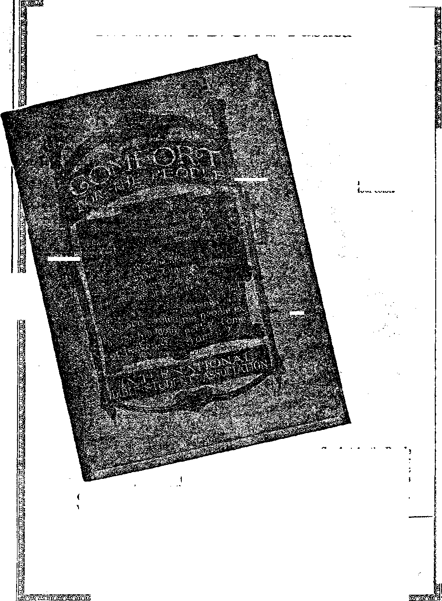

Pere and There Throughout the World
Preliminaries of the French Revolution........ . 39
Political—Domestic and Foreign
A National Crime Commission ............. 30
Vast Unexplored Areas of Brazil
Something New in Injunctions ......
Prof. Ricci’s Heat Rays ................ 42
A Study of Oue Sister Planets .............
“Lost Worlds” . ....... . . 47
Finance—Commerce—Transportation
New England Textile Conspiracy . ...........36
Meat Packers Get Back their Halo..... 38
' Home and Health
Dandelion Greens the Year Round .
Ill Effects of Hot Baths . ...............49
Handling the "Kiddies” ....... 51
Harpooning the Evolution Theory......... 48
The Only Support for the Ministry
The General Convention at Indianapolis . .
A Standard fob the People ...............55
Be Still and Know that I Am God (Poem) ......... 57
The Resurrection of the New Creation........ .
Studies in “The Harp of God” ................
Published every other Wednesday at 18 Concord Street, Brooklyn, N. T., U. S. A., by WOODWORTH, HUDGINGS & MARTIN
Copartners and Proprietors Address: is Concord Street, Brooklyn, U. F., £7. £. A.
CLAYTON J. WOODWORTH . . . Editor ROBERT J. MARTIN . Business Manager WM. F. HUDGINGS . . Sec’y and Treas.
Five Cents a Copy—$1.00 a Teas Make Remittances to THE GOLDEH AGE
Fobbign Offices : British,.....34 Craven Terrace, Lancaster Gate, London W. 2
Canadian ......... 38-40 Irwin Avenue, Toronto, Ontario Australasian ....... 405 Collins Street, Melbourne, Australia South African......6 Leiie Street, Cape Town, South Africa
Entered as second-ciass matter at Brooklyn, N. X., under the Act of March 3, 1872
J.. ....... " ............. i' ■ . .... .......... ................ ---If
Volume VI Brooklyn, N.Y., Wednesday, October 21, 1925 Number 158
[Radiocast, with other items, from Watchtower WBBU on a wave length of 272.6 meters by the Editor.]
Cheap Fuels and Fertilizers Coming
THE German secret of making synthetic motor fuel is now known on this side of the water and assurances are given in the chemical magazines that in a short time the two most important chemical compounds in this country will be synthetic ammonia for use as a cheap fertilizer and synthetic methanol for use as a cheap motor fuel. Eight chemical manufacturing concerns have already obtained licenses to manufacture under the new process.
A PHYSICIAN in San Francisco cured a patient of bronchial asthma by having the patient’s bedroom thoroughly cleaned and thus getting rid of the germ-charged dust which was causing the trouble. The fewer dust catchers there are in a bedroom, the healthier the room as a sleeping apartment.
Weldon Gould, Columbus, Ohio, high school student, has an educated crow. The crow lives in a tree opposite the Gould homestead and follows members of the family wherever , they go. Young Gould has a paper’ route and the crow goes along with him, supervising the deliveries. Attempts have been made to steal him and he has found means to bring this to his master’s attention. The affection came about through young Gould’s caring for the crow when the bird was young.
THE shape of Niagara Falls is changing. The
Horseshoe Falls, on the Canadian side, are becoming more and more elliptical in form, due to the rapid cutting aw’ay of the center. A few years ago the rate of recession of the Falls was only a few inches a year; now it is five feet; the rock is getting softer and a gorge is forming. Niagara will ultimately destroy itself.
rpHE president of the Poinsett mills, Green--T ville, S. C., testified in a tax case that the welfare work among the employes of his company was “necessary to produce an attitude of contentment toward the company among its employes, to equalize the lesser wage established in the section in which the company operated with a somewhat higher scale paid in other sections, and to reduce the volume of labor turnover.”
AT THIS writing there is every indication that the year 1925 will end in an anthracite coal strike. The operators have large stocks of coal on hand, some of them sufficient to last for six months; and a strike will suit them very well, as it will mean fancy prices for their surplus stock.
Under the Guise of Religion
ALL things have been done in the name of religion, but it remains for Oklahoma to start a new thing under the sun. Under the guise of religion bands of strikers have been praying for the souls of strike breakers in their hearing, and so successfully that the sheriff of the county has ordered all these outdoor prayer meetings on mine property to cease.
IF THE number of women workers in the
United States all lived in the same city, and nobody else lived in it, that city would have a larger population that London. If they all traveled on the same train at the same time the train would be over a thousand miles long.
OMMENTING on the muddy unpaved streets of a generation ago, and introducing other interesting items, Mr. Alvin E. Dodd, of the United States Chamber of Commerce, recently said: “Nowadays the not-so-tired business man leaves his office, or his golf club, rides home in his Detroit automobile over streets of Trinidad asphalt, enters his house of Portland cement and Georgia pine and filled with Grand Rapids furniture and Brussels carpets, eats his dinner of Texas beef and Maine potatoes off a Limoges china plate and afterwards sits down at leisure to smoke a cigar wrapped in Sumatra tobacco grown in Connecticut and reads a Chicago mail order catalogue printed on paper made from Canadian pulp, offering to ship him anything from a cold remedy to a cold chisel.”
EW ENGLAND is suffering from a conspiracy of the textile manufacturers to reduce wages, in spite of the fact that wages in all other lines are being maintained, and that the textile workers will have to pay as much for their necessities as before. Moreover, their buying power will be reduced, and a general unsettlement industrially is liable to result.
N INDIAN ex-footballplayer has established world’s record for laying brick on a highway near Kansas City, Mo. In one day he laid three and one-half carloads of brick, necessitating the service of five men to keep him supplied with brick. His wages are $16 a day.
OST of us have received back valuable items of personal value which we unintentionally left in the pockets when we sent out things to the tailor. Now comes the Dyers and Cleaners’ Association at. Atlantic City to tell us that Americans are so careless of wealth that fifty percent of the clothing received at their establishments contain articles of value.
OYS at New Brunswick, New Jersey, broke into the grounds of the New Jersey State 'Agricultural College, pulled up the marking
stakes which Ehd been set to identify a special type of corn, and ruined four years of scientific work by roasting and eating the special corn itself. The so-called comic supplements probably conveyed to their minds the idea that this sort of fun is all right. ■
OR a time it seemed that shipment of valuables by airplane would provide at least one method of almost absolute security against robbers, but now that hope is shattered by the robbery of an air mail in San Francisco before the valuables could be taken from the landing field to the post office.
HO HE United States Department of Commerce is keeping a watch of the deaths by automobile in 57 cities. From week to week over one hundred persons are killed in these cities. New York City had 501 killed from January 1 to July 18, 1925.
WHILE ago we had word that the cleaning up of Philadelphia seems to be beyond human power. Now comes the director of the Chicago Crime Commission and makes a similar admission with regard to Chicago. All this is the natural fruit of throwing away the Bible and taking evolution instead. Indeed, evolution does not regard crime as a crime at all. Chicago has annually more murders and holdups than England and Wales put together.
RIGHTENED, and properly so, the leading business men of the country are advocating
a National Crime Commission to see what can be done to mop back the ocean now rising. The New York World blames the tide upon legislators, lawyers and judges. They must bear a share, but there is a large share resting upon the business men themselves for their crooked practices, and most of all upon the clergy for not properly preaching and teaching the Word of God instead of the fossilized theology of the dark ages and then throwing away the Bible altogether in a mad scramble to become evolutionists. -
THE Mayor of Chelsea, Massachusetts, has been indicted as the head of a crime syndicate operating a rum trust throughout eastern Massachusetts. It is charged that the rum fleet landed liquor at Chelsea under police protection and that rum cargoes were moved through the streets under police escort. Ten members of the police department and thirty-three other men were indicted along with the mayor.
STATISTICS of the New York State Department of Health show that women are expected to live about three years longer than men. In 1920 the expectation of life for men in New York State was 52 years, 10 months, while for women it was 55 years, 8 months. The expectation has increased greatly in the past twenty years. In 1901 it was less than fifty years for both sexes.
ONE after another of the old industries passes away, its place having been taken by some better method of accomplishing the same result. It used to be that four million tons of ice were cut on the Hudson Bivcr every year. Now almost all the ice used in New York City is artificial.
THE American Telephone and Telegraph Company has finished the construction of an overland cable from New York to Chicago costing some thirty thousand dollars per mile and carrying five hundred wires. The route, 861 miles long, is via Reading, Pittsburgh and Cleveland. Other cables are contemplated.
FOR the first time in history the Roman Catholic church has imported into the IT.
S. A. a package said to contain the bones of a saint, namely St. Christina. A very expensive church will be built to house the saint at Cleveland, Ohio. According to the New York World all that happened to St. Christina was that her body was torn with hooks, she was hung over a fire, was thrown into a lake with a stone tied around her neck, was burned five days in a furnace, was thrown, among serpents, had her tongue cut out and was finally killed by being shot full of arrows. The price paid for the saint is said to have been about $100,000, i. e., that was the amount it was necessary to leave in Italy in order to get it. Previous efforts of American prelates to get an honest-to-goodness sure-enough saint for use on this side of the water have hitherto proved unavailing, but the $100,000 seems to have done the trick. The Pope did not want to let it go, because he was afraid the Italian people would miss it; but the $100,000 persuaded him. The church authorities admit that they do not know anything about St. Christina except that she was a saint.
THE Cornelius Vanderbilt home at Fifth Avenue and Fifty Seventh Street, New York, did not present such a grand appearance, but it nevertheless sold for seven million one hundred thousand dollars. The house cost more than three million dollars to erect. The lot was assessed at $4,700,000.
INDIANAPOLIS will require that hereafter any person who kills another by automobile must spend one hour alone in the same room in which lies the body of the one killed. In another place it is proposed to escort the killers about town in an iron cage mounted on wheels.
ALTHOUGH Americans are not fish eaters to any extent as compared with the natives of the British Isles, Scandinavia and France, yet there are six thousand vessels engaged in American fisheries, with a total personnel of about two hundred thousand, and an annual catch worth over $100,000,000.
OCCASIONALLY strange things happen to the mails. A letter or several letters disappear completely and what becomes of them no one knows. The other day a postman in New York delivered a post card that was sixteen and one-half years old and had spent all that time going a few miles in New York City. No one knows where it has been.
TN THE first month of overnight air mails beA tween New York and Chicago there were about seven thousand pounds of mail each way, amounting altogether in postage fees to some $21,600. The mails are growing heavier daily. The rate between the two cities is ten cents per ounce. New Hampshire, for one month in the summer, has a rural delivery of mail by airplane to the summer colonies on the north shore of Lake Winnepesaukee.
FIVE years ago the meat packers expected to go to jail, so they voluntarily submitted to a judicial decree enjoining them from certain practices of which they had been guilty. The first day after election last fall they presented a request to have the decree vacated. It has been done. The meat packers now have their halo back and can safely do that for which they expected to go to jail five years ago.
ILLINOIS has a new law making it illegal for a judge to issue an injunction prohibiting peaceful picketing. This law has successfully met its first test. . Judge Pam in the Superior Court of Cook County upheld its constitutionality and set forth a definition of peaceful picketing such as can be done without any injunction being issued against the picketers.
ALMOST everybody likes tuna fish salad.
Somebody will have some surely, as a result of a 1165 pound tuna fish recently caught off Manasquan, New Jersey. The fish did not want to be caught. Before he gave up the fight he managed to throw overboard two of sixteen fishermen who had hold of him; but they finally brought him to shore after a two-hour battle.
THE new postal law is not working out well in one item; namely, in that which fixes the postal rate at two cents each for other than government cards. The result is that people have stopped buying cards to such an extent that the ten-cent stores are putting in only half the usual supply. The government will probably get less revenue from this item under the new rates than it did when cards were only half as much. The law as a 'whole, however, is all right, and is producing about fifteen percent more revenue than the old one.
Five Million Radio Sets
A SURVEY of the radio sets in use indicates about five million sets, of which two-thirds are factory sets and the remainder assembled at home. The average cost is about $100, with five-tube sets the most popular, and practically all of that class fitted with loud speakers. The fad is largely a masculine one.
Talking Movie Already Here
"VT 0 SOONER do we get reconciled to the thought of pictures by radio than the radio announces that moving pictures can be transmitted by that means; and now an inventor in Washington, C. Francis Jenkins, has added the Talking Movie to the list. Mr. Jenkins’ apparatus works and has been designed as an attachment to standard radio receiving sets.
TV- Edwix R. Scott, pupil of the late Dr.
Steinmetz, announces the discovery of an invention which he claims will destroy all life on land, sea or in the air, within a radius of twenty miles, or destroy any structure at a distance of ten miles. In experiments animals were killed at seven miles.
IN A letter to the London Daily Mail, Dr.
G. J. Rousseau, Pastor of the First Baptist Church of Pensacola, Florida, made the statement: “Professors in America have written ponderous volumes, circulating them among college students under plain wrappers, in which promiscuous relations between the sexes are advocated on the ground that men are mere animals, and that the restraints of the social order were the impositions of the mediaeval bigotry.”
Vast Unexplored Areas of Brazil
SO GREAT is the vast country of Brazil that there are said to be in it not less than a million square miles of forest areas that have never been explored. Scientists are now attacking the exploration of these areas with' greater and greater persistency, in spite of all the terrors with which the forests abound.
ALL revolutions, of course, have their preliminary causes. Sometimes they are “bloodless” ; but these are few and far between, and belong more particularly to our own period. If ,we will study and analyze the history of the past four hundred years, we will note a progression from one line of achievement to another, leading up to what is called “modern progress”. Really, modern invention and discovery backgrounds largely in the past. The great influx, however, was reserved, under Divine Providence, for the “Time of the End”. This period, prophetic students agree, began in 1799.
The sixteenth century was the epoch of the arts and the birth of creeds. Beginning with Luther’s reformation one reform after another was launched in quick suecession. During this period the Great Harlot of Romanism gave Furth to many children -sectarian systems—■ which are still with us. With the introduction of the seventeenth century came a revival of learning; and this is usually designated the period of letters, while the eighteenth and nineteenth centuries seem to have been specially set apart for the development of science, which had its inception immediately following the beginning of the “Time of tie End”, and has progressed by leaps and bounds, under divine supervision, up to the present day.
This has been a time of awakening and renovation all along the line. During this great epoch men like Franklin, Volta, Galvani, Edison, Tesla and Marconi, have come forward with remarkable discoveries in the realm of physics. From Franklin’s lightning-rod and Volta’s battery, to telegraph, telephone, radio, and giant dynamos is a far cry, and as our vision sweeps the past and beholds the present we stand amazed at the magnificent changes wrought in two short centuries, especially during the past fifty years.
And all other sciences have kept pace; mathematical analysis, botany, zoology, geology, and chemistry have been laid on firmer foundations than ever before, although there is still room ifor improvement.
It has been these wonderful, revolutionary changes in living conditions and social life which have given rise to the pernicious doctrine of evolution. Man fancies that he is in a selfcreated “Brain Age”, whereas he is in the dawn
of the Millennium. Thus is verified the admonition that “a little learning is a dangerous thing”. God has merely given mankind a firmer grasp on the laws of nature, and made him their master to a certain degree, but by no means their absolute controller.
Literature Used as a Weapon
DURING the eighteenth century literature invaded everything and became a dominant factor in regulating government and society in general. Thus while the physicists were uncovering new and strange forces and the navigators were discovering new lands, the writers were revealing a new world of thought and intellect. Literature broke the fetters of art, and refused to submit longer to its control. It claimed, on the contrary, the right to regulate. “Advancement of the public welfare” was the watchword, and it was this cry which led up to the French and American Revolutions and now forecasts the one impending which today bids fair to wreck all the governments of earth in a gulf of anarchy.
Frenchmen with virile force and unpoetie speech first took up the cudgel and labored unceasingly for needed reforms. Fine verses, flowery oratory and high-flown phrases were in the discard, and the aim was to give utterance and expression to practical maxims. These writers and spell-binders were bent upon reforming human society. Literature was converted into a weapon, which both the skilful and the imprudent sought to wield.
But by a strange “trick of fate” (or shall we say, divine providence?) the ones who approved and applauded the invasion of new literary genius into the political field were the very ones who were ultimately destined to suffer most from its influence! They took fire into their bosoms unwittingly. The “cockatrice eggs” hatched by Voltaire and his contemporaries broke out into “fiery flying serpents” of retribution to bite those who hitherto had looked on the eggs with admiring glances of approval.—■ Isaiah 14:29; 59:5.
Voltaire, Montesquieu, Rousseau
WHILE this was a frivolous and sensuous age, nevertheless talent was. greatly admired and coveted, much as it is in our own day.
Three outstanding characters came on the scene and took charge of the movement:
(1) Head and shoulders above all was the fiery and passionate Voltaire. His was not an angelic character, by any means; no one would care to hold him up as a paragon of virtue; yet, be it said to his credit, he was a life-long champion of human rights and liberty of thought and expression. He detested Papacy and, mistak-ingly believing the Bible to be the supporter of its abominable practices, hurled his literary thunderbolts against both with equal fury.
(2) Next came Montesquieu, who specialized on the study of civil governments and their laws. He advocated a thorough examination and comparison of the constitutions of the various countries and states in order that the common people might select the best. He looked upon the English constitution as the most conducive to human liberty and progress.
(3) Lastly came Rousseau, who proclaimed the theory of universal suffrage and national sovereignity in his “Social Contract”.
Grouped on each side of this triumvirate of French literary genius were the “encyclopedists”. Their function was to review human knowledge and then enunciate and set it forth frequently in a way which bodied ill for the established order of things, social and political. Their teachings were always hostile to religion and the Bible. :
Later on, Quesnay brought forward a new Science, called political economy, which many erroneously assume is a sole and exclusive product of our time. Present political economy is based largely upon the teachings of Quesnay and contemporary writers, but has been elaborated upon by modern writers on the subject and made more elastic to fit present conditions.
HE guns of infidel writers were trained upon everything in sight; human thought assumed a new role; it clothed itself with the garments of authority and overleaped the barriers which had previously confined it to merely metaphysical and religious philosophizing and speculation, or what was called “the unselfish worship of the Muses”. It unhesitatingly sallied forth to attack the most baffling problems of society. 'All saw their solution in liberty and still more liberty, the cry for which grew more and more Insistent and swelled louder in volume until it resounded throughout the French Monarchy, and echoed and reechoed from the Alps to the Pyrenees, kindling the fires of revolt and revenge which were later to break forth in all their fury as a devouring flame to consume the old order’ of thing's and make way for the new.
At this juncture in the preliminaries of the French Revolution there was clearly a disagreement between ideas and institutions; the new order was trying to supplant the old; radicalism was in the very air and “would not down”! It was a struggle of a 1i1tle light against great darkness. But to the French the morning had come when they were to make a bold and blessed strike for liberty, when they would break the chains of superstition and emerge free. But' while the morning dawned, we now behold at this distance, a queer paradox; there was a gathering darkness which grew blacker’ and thicker until, like the darkness of Egypt, it could be felt.
Why was this? Because God was not the instigator of the French Revolution, but Satan himself. It was a wicked scheme of his own devising, but one which God could, when the great crash came, overrule for the ultimate good of mankind and cause to redound, like all the other wrath of men and devils, to his own glory! By the force of circumstances and the hard logic of events He caused many to see that those who make war with heaven are their own worst enemies and really fight against themselves, eventually working their own destruction.
Here we note a peculiar thing: Before the advent of Voltaire and his colleagues the people and their rulers were almost wholly concerned with discussion of religious dogmas; but now they were occupied solely and exclusively with earthly things; the people became materialists and completely discarded religion as a fraud and a sham under the tutelage of their leaders. Terrestrial matters were their chief and only concern. This led to proscription of the Bible and persecution of all who defended it or sought to preserve it. Study of the divine character, God’s will and His grace were cast aside and in their stead were substituted as superior the rights of man, society and its obligations.
The middle ages and feudalism had left their fragments of the most shocking injustices, inequalities and oppressions; confusion reigned everywhere, and even the brightest of leaders were at sea. Complaints poured in on every gide; the monarchy was pressed to do something to relieve the sufferings of the masses, but it remained mute and oblivious to the thousands of appeals which ascended, not to the Throne of Heaven, but to the throne of French royalty.
Faith in a living God and in His providences had perished, due to the influence of the Pope and his hypocritical emissaries! As one historian of the period expressed it, '‘'Government • . . had become a frightful labyrinth wherein the most clever must lose his way.” It was rapidly becoming a “government without a foundation”.
Materialism, graft, greed, and love of ease and luxury were the sovereign masters of the king and queen and the nobility. The public treasury was constantly pillaged and robbed by the king and his coterie of ministers and other officials. Property was confiscated while personal liberty and safety were never secure from the lettres de cachet or orders of arrest which were invariably of the most arbitrary character and usually without the slightest justification or provocation.
The royal criminal code had back of it the horrible Inquisition, and the civil code was likewise a monstrous piece of inequity. Land and other property had drifted, under this system, into the hands of the nobility; and the poor, which included the vast majority, were reduced to a serfdom in comparison with which American Negro slavery was a luxury and a blessing. Country produce was tolled and taxed so repeatedly en route to the city markets that the farmer could not make a profit, but usually came out in debt. It was under these terrible conditions that the French populace were finally goaded to desperation and arose in their might and fury to throw off the power which was strangling them.
Getting Rid of Undesirables
ITHERTO the Papacy had imposed its dogmas upon the French people under penalty of death; but now the people demanded religious toleration and a revamping of civil laws along more nearly just and rational lines, with a view to lifting up the downtrodden. They, through their leaders and representatives, called for an end of autocracy and a recognition of the rights of all the people instead of those of the “special interests”, the privileged few.
Bossism was doomed and must go; false religious and political prophets must be scourged from out the high places. Weights and measures must be standardized and unified ; taxes must be paid by everyone, instead of continually practising extortionate taxation on the poverty-stricken masses while exempting the wealthy from taxation. Labor demanded its rights; it must be emancipated, and there should and must be free competition, instead of monopolistic combines. Public offices should be bestowed on a basis of merit, and favoritism to birth and fortune should be abolished. To bring about all these sweeping changes a revolution was absolutely necessary, and no one doubted that it was coming.
In proof of this, note Fenelon’s remark concerning the monarchy as early as 1719: “The dilapidated machine still continues to work because of the former impetus imparted to it, but it will go to pieces at the first shock.”
But his statement did not apply to France alone; it applied to all of "what was then known as “absolutist Europe”. If, in some places, the common people did not feel the need of reforms, they were undertaken anyway by some of the princes. Some of these encouraged industry, agriculture and science, and constructed canals, roads and schools, abolished abuses and privileges, and exiled the Jesuits who, they claimed, “embodied all the evil influences of the past.” Therefore, one of their first concerns was to get rid of them; and in the light of the history of Papacy as outlined in the Word of God and on the pages of secular history, can we blame the French people? Surely, the first thing to do in order to bring relief to the people would be to get rid of Antichrist! But what they did along this line was as nothing compared with what was to come, as we shall see.
The emancipation spirit spread. Marshes were converted into fertile fields in various parts of Europe. Some of the European people were emancipated from “feudal taxes”. Joseph II of Austria abolished the tithing system, forced labor, etc. He made the church subject to the state. In Sweden torture was forbidden, church festivals were almost abolished and the output of the iron and copper mines was greatly increased.
The reforms extended to Russia, and Catherine the Great cultivated the friendship of Voltaire and others who were advocating revolution with the view to influencing public opinion through them. She hypocritically had drawn up a wonderful constitution which was never executed, and consequently amounted to nothing. She had magnificent schools built, but no one attended them; it was all a fake, designed to impress the people with her loving (?) concern for their welfare 1 Finally the governor of Moscow wrote her in despair, commenting on the situation. She replied: “My dear prince, do not complain that the Russians have no desire to learn. If I set up schools, it is not for our own sake, but because of Europe, which is watching us. As soon as our peasants wish to become enlightened, neither you nor I shall remain in our places.”
Quite true! It is enlightenment in this dawn of the New Day of Christ’s glorious presence which has given us in our own day an almost crownless Europe and threatens to engulf present institutions in anarchy and destruction! “It is dangerous to make men too learned,” declared Cardinal Pole at the commencement of the Reformation. Dangerous for the crowned head and Satan’s empire, most assuredly I
At this juncture the situation was tense; the air was charged with chain lightning, and the great storm was about to break. A spirit of reform and liberty was breathing over all Europe. Men thought reform, preached reform, urged reform and longed and hoped for reform ■—social reform.
Monks and theologians did not participate in this preaching. The princes, however, taking advantage of the movement, placed themselves in command of it, in the hope that it would profit them in the long run, as they had reaped a rich profit in the same manner from having church property “secularized” during the Lutheran and Anglican Reformations.
Therefore, they for once concerned themselves about the welfare of the dear people, whom they had been busy exploiting until they saw the storm brewing. Liberty and freedom were given them at the expense of the clergy and the nobility.
Heavy burdens were lifted, and the people were given a breathing spell and a time of rest from their troubles—a precious boon to them, no matter from what quarter it came nor the motives in giving it. The real purpose of the princes, of course, was to increase their own revenues and influence with their subjects. “My trade is to be a royalist,” expressed their real attitude and conviction.
In truth and in fact, nothing was changed; the power which feudal anarchy had allowed them to grasp was preserved, and it was this which was endangered by the ever-increasing and enlarging interests of the people.
Thus the way was paved for the great revolt with the salient features of which we are all more or less familiar. The same conditions are now operating throughout the world on a vastly larger scale, and will soon bring on the great time of trouble and wrath predicted in Scripture—“a time of trouble such as never was since there was a nation”—immediately preceding the establishment of Messiah’s kingdom.
From the Schweizer Freie Presse (Translation by F. Leon Scheerer)
A SCIENTIFIC gathering held in Paris recently has opened up an amazing view of the possibilities of the near future. Professor Ricci of Rome introduced his famous “Heat Rays”. The modest little man was quite reticent. There was little need for explanatory words. His secret consists in transforming light rays into heat rays of unusual power.
His apparatus is not much larger than a cigar box. A copper kettle, when hit by a Ricci ray, becomes red hot. A miniature ship loaded with ammunition and floating on a small pond, explodes when hit by a Ricci ray. A small aeroplane hit by the same death ray in its fuel tank, a balloon struck in its gas bag, all are subject to the Ceterum Genseo of the little spectacled Italian.
Ricci is a pacifist. At least he asserts it with a sphinx-like smile, and his aim is to make war an impossibility. His rays will bring flaming death to both city and village, singe and blind whole armies at great distances as soon as he causes the required force to be brought to bear. Forests may be consumed in flames, while all objects within reach of the fire would turn to a glowing white heat. But Professor Ricci does not aim at destruction; his primary object is to utilize his invention for economic productivity.
From a central station, light and heat are to be transmitted to every dwelling without wires. Ricci rays are to do the heating, lighting and cooking. The Thermidor of the little Italian will turn our entire domestic economy topsyturvy. Electrical works will have outlived their purpose. Gas works will belong to the past; coal dealers will be unable to dispose of their supplies, while heating plants will undergo radical changes. There would be neither coal nor gas nor current burning in the kitchen. At the smelters the furnace fires could be extinguished. Industries, trade, all will be made over by means of the new energies created by Ricci.
In the ocean, the great icebergs, a menace to ships, will be melted like butter before the sun. Scott and his brave companions would still be living today, had. they been in possession of Ricci’s Thermidor. Over and over again Professor Ricci emphasized in his sober manner that he was allowed only to use much reduced rays for demonstration.
At the interesting meeting one of the guests (protected with goggles) held a cigar in his mouth to which the weakest ray was directed but for the fraction of a second, and this caused the cigar to light instantly. A pan of water, upon which the ray had been directed for less than a minute, was made to boil. The eyes of the feminine guests were literally beaming. What sunrays will not Professor Ricci focus into the kitchen, bathroom, laundry, in fact the entire household!
That the world is "advancing” at a rapid rate is readily discerned even by those of our fellow men who have come over from the easy-going “last century”. But not with gladness always. Much that is new has surprised us. One sensation follows another. Often it requires effort to habituate ourselves repeatedly to the changes which are demanded of us.
We are still heavy travelers on the treadmill of tradition. It is a long stretch from Goethe to Shaw, equally far it is from Roentgen to Ricci. And if we assume all possibilities as having been exhausted, and regard the slogan 'thus far and no farther’ as fulfilled, then the last miraculous invention carries us suddenly over every wall reared by our senses and aspirations.
But the Ricci rays are fearful. The criminal could set houses on fire invisibly. With Ricci rays an enemy might blind his victim from a small pocket lantern. Wars as at present will become an impossibility, but they will simply be conducted in another way. All progress concerns itself with both the physical and the mental phases. We are made up of both divinity and deviltry, and . know immediately how to translate into fiendish devilishness every advantage attained through study and research. Thus man maintains firm foothold on terra firma. We remain humans, even though our spirits may soar to the spheres and know how to delve into the secret forces of the universe. But as the London Tidbits observes:
“Some of the most useful gifts of science were first revealed to mankind in a malevolent rather than a benevolent aspect. But even the most destructive agencies may in the course of time be brought into the constructive service of the human race.”
THE season of dandelion greens may be made perpetual. A dish of these, daintily seasoned with butter, is a real addition to the bill of fare. Do you know that one can have greens in the winter time, too? Simply clean as for cooking; put a thin layer of salt into a crock, then a layer of greens, etc., as you would do in salting down cucumbers; weight down, and tie a cloth over the crock, when full. They make'their own brine.
If the cloth has not been removed for some time, a thick mold may be found on top of the brine. This has not harmed the greens. Before freshening, swish them, a few at a time, through two or three waters, to rinse the brine away. It is best to freshen by washing away all the old salt, and to season with new salt. They will not smell like new greens, while freshening, any more than do salted cucumbers smell like new; but they will have a pleasing taste when served.
THE study of astronomy is one of the most fascinating of all the sciences. Among other tilings it proves to us how little we really are. Says Professor Mottram, of the University of London:
f4 Mankind lives on a second-rate satellite of a fourth' fate and moribund star. Once we thought we were the center of the universe—that the sun, moon and stars rose for our benefit and bowed down to us. That conceited view was smashed by Copernicus, and now we feel lost In the universe-—a mere speck—rather as an ant might feel, had it a human intellect, when alone in a cathedral.
Naturally man has stretched out his hands across space in the hope of meeting other hands. It is so terribly lonely if we believe that the vast halls of space are untenanted by other thinking beings. That we are the only human beings in the unmeasurable universe is too horrible to many, and therefore, wrongly unthinkable. Yet, to prove the contrary is well-nigh impossible. That is the fatal fascination of the problem.
The number of people who are measurably acquainted with the stars and their movements is quite small. The majority of people imagine that the orbs of light that they see in the sky are all practically alike. They little realize that at least seven of the nearest “stars” are worlds like our own, some having reached a point of development similar to the earth, while others are far from it. Three of these orbs are easily distinguished from the myriads of others, while the others tire either invisible to the naked eye, or appear the same as an “ordinary star”.
PLANET is a heavenly body which revolves around a sun as a center. There are secondary planets called satellites which revolve around their primary planets. Our moon is one of them. Excepting the planets of our solar system, all the stars we see are gigantic suns or groups of suns, many of them estimated by astronomers to be many millions of times larger than our sun. The orbit of a planet lies in one plane and is elliptical in shape. This explains why our earth is farther from the sun at some seasons of the year than at others. All the planets rotate on their axis, but not all in the same period of time. Jupiter, for instance, is said to make one rotation every ten hours.
The major planets of our solar system are eight in number. In their relative position from the sun they are as follows: Mercury, Venus,
Earth, Mars, Jupiter, Saturn, Uranus, and Neptune. Of these, all are visible to the naked eye with the exception of Neptune. Uranus is also invisible much of the time. Uranus was visible without the aid of a telescope during the month of September this year, 1925. Venus and Jupiter, and Mars most of the time, are easily distinguished from the “fixed stars” on account of their superior brightness, while the others are distinguished because of their own known positions. Mercury and Venus are called inferior planets in that the planes of their orbits lie between the earth and the sun; while the others are known as exterior planets because their orbits are on the opposite side of the earth from the sun. .
Some astronomers are of the opinion that there are yet at least two more planetary members of the solar family, the one having its orbit between that of Mercury and the sun, and the other outside Neptune. In fact, they are so sure concerning the infra-Mercury planet, that they have given it a name: Vulcan. The reason given for these assertions is the peculiar restlessness of both Mercury and Neptune. The reason bears much weight in that Neptune was discovered by astronomers who were trying to explain the peculiar actions of Uranus.
Some of these days it may be that a telescope will be invented which will so diminish the rays of the sun that Vulcan will appear in all his glory, that is if he is there. And likewise, some astronomer in searching the limitless expanse of the starry skies might accidentally stumble over the as yet unnamed planet sailing through the depths of those dark seas beyond Neptune’s orbit and calling, “Ah! at last you have found me. I have been out here in the cold all this time, but you didn’t know it.” Who will be the lucky astronomer that will bring to light this hidden child of Old Sol?
The latter part of July of this year (1925) witnessed quite an interesting grouping of our planets. Hicks’ Almanac for 1925 had told us:
Moon will pass only ten minutes to the north of Venus on the twenty-second at 8:40 p. m. (Central Time), a chance of a lifetime to see them so close together at the right hour of observation. Venus will be only six minutes north of Mercury on the tenth at 8: 00 p. m. At 9: 00 p. m. of the same evening Mercury will be only fifteen minutes north of Mars, and at 10:00 p. m. the same evening Venus will be only twenty-two minutes north of Mars; some grouping we must say— Mercury, Venus, and Mars all in a close cluster at the same hour, and at a splendid time for observation, but real low towards sunset.
Neptune is also included in this grouping, but is invisible to the naked eye. Toward the latter part of July, Jupiter reached his point of “opposition” ; that is, he arose just as the sun was setting. Saturn was at quadrature, or on the meridian at sunset. Those possessing telescopes were able to see six of our planets on the same evening at the same hour. ’Uranus, the seventh, was invisible on account of being morning star at that time.
THE smallest of the known planets and the closest to the sun is the planet Mercury. Its diameter is only about three thousand miles and its volume one-eighteenth that of the earth. Mercury is just two and three-fourths times as large as our moon. If a person weighs 150 pounds on the earth he would weigh only 60 pounds on Mercury. Mercury’s period of revolution around the sun is only eighty-eight of our days. Some astronomers claim that this diminutive planet rotates on its axis once every twenty-four hours, while later investigations seem to have proven that this rotation requires eighty-eight days, the length of its year. This would mean, then, that the same side of the fleet little body would be toward the sun all the time and baked in perpetual sunshine, while the other side would be freezing in eternal winter. However, recent observations with a heat measuring apparatus indicate that the dark side of the planet radiates much heat, and this might indicate after all that the time of rotation is as first computed, i. e., once every twenty-four hours.
Mercury seems to be an appropriate name for this eccentric little fellow, as it changes its apparent position in the sky quite rapidly. It is possible for it to be morning or evening star at four different seasons of the year, and this is something no other primary planet can boast of. The eccentricity of its orbit is greater than that of any other planet of the solar system, its greatest and least distance from the sun differing by almost fifteen million miles. When Mercury is nearest the sun it travels faster, and this has caused astronomers to make the assertion that there is at least one other planet between it and the sun. There seems to be present an influence which cannot be accounted for in any other way.
Most people have not seen Mercury to their knowledge, since it is not visible more than two hours before sunrise or two hours after sunset, and then there is usually a smoky haze near the horizon that hinders clear observation. Mercury’s brightness is usually a little more than that of a first magnitude star, but it is difficult to locate with the naked eye because of its nearness to the sun. Like Venus and the Moon, this little planet appears with phases; but these can be seen only with the aid of a telescope.
Evidently Mercury has no atmosphere, and hence could not support life. Its reflecting power is quite low, practically the same as that of the moon, and hence its surface must be rocky and barren, and without moisture or the elements necessary to support life.
rPHE planet Venus is just a little smaller than -*■ our earth, and is the next planet between us and the sun. It is about thirty million miles closer to the sun than we are. Its diameter is about 7500 miles and the length of its year is 224 of our days. Venus is said to rotate on her axis in twenty-three and a half hours.
The surface of the planet is not visible to us because of the heavy veil of clouds which obscures it; and furthermore because when the planet is nearest the earth it appears as a small crescent, the greater part of its disc being hidden in the darkness of the night. For this reason little or nothing is positively known of conditions existing thereon, and anything that might be said on that subject is therefore largely conjecture.
Sometimes Venus approaches as close as twenty-six million miles to the earth, which is but a short distance, telescopically speaking; but on account of the heavy veil she wears, no one has actually seen her face. Every now and then the beclouded lady passes directly between us and the sun. She then appears merely as a black spot on the disc of that fiery orb, and this spot is surrounded by a bright ring -which is nothing more or less than the cloudy veil.
Venus is the brightest of all the planets. It would be still brighter if we could see the entire disc at its nearest approach to the earth. It is an especially beautiful object in the western sky, getting brighter and brighter from June 1925 until the spring of 1926. Since it is an inferior planet (that is, its orbit lies between us and the sun) it cannot be seen longer than about four hours after sunset if it is evening star, or for a similar period before sunrise if it is morning star.
THE red planet Mars is next for our consideration. It is the first of the exterior planets outside the earth’s orbit and smallest in size, ranking next to Mercury in that respect, when all the planets of our solar system are taken into consideration. It is about 4500 miles in diameter and rotates on its axis in about the same time that our earth does. The length of a year on Mars is equal to about one and nine-tenths of our years.
On August 23, 1924, Mars approached very close to us, the closest he has been for 120 years, and the closest he will be for the next century. The brightness of the planet exceeded that of the planet Jupiter; but now on account of his remoteness his brilliancy is less than that of a first magnitude star. Mars at his closest was still thirty-five million miles away from us, just a little too far for a parachute jump. Nevertheless, this close proximity was the occasion for the training of hundreds of telescopes upon him.
The theory had been advanced that the war planet is inhabited. That was the time to test it out. On the day just mentioned many eagle eyes were watching for flashes to come from the Martians, but apparently none were sent. No radio signals were received, and astronomers must wait until we swing around again to the same relative position. It might be noted here that the science of astronomy has made rapid strides since the last time Mars paid us such a close visit, and it was hoped that the theory of life on the planet would be verified. We can be sure also that we will learn much more in every way before the time for another Martian call rolls around.
Mars is similar to the earth in many respects. There are marked lines on his surface which are supposed to be canals. There are polar ice-caps which decrease in summer and increase in winter. Mars has two moons, but they are baby moons compared to ours. One is only eighteen miles in diameter while the other is just twenty-two miles. One of our modern express trains could run around either of them in less than an hour; and an airplane, conditions favoring, could cover the entire distance in a few minutes. The smaller of these two satellites turns on its axis in the short period of seven hours and forty minutes.
THE four outermost planets, beginning with
Jupiter, are especially different from the four innermost by reason of their sizes. Thus Uranus, the smallest of the outer group, is larger in diameter than the earth, the largest of the inner group, by some twenty-three thousand miles. Another distinguishing feature of this group of major planets is the period of axial rotation. The time of rotation of the outer group averages nearly ten hours while that of the inner group is nearly twenty-four hours. The number of satellites of the outer group is twenty-four, and that of the inner group only three.
Jupiter is the largest of all the planets of our system. Its volume is greater than the combined volume of all the rest. Some interesting comparisons were made by Charles N. Holmes in “Science'and Invention” for Sept., 1923. According to the figures presented there, Jupiter’s diameter is equal to twenty-nine Mercury diameters. It would take 425,000,000 Brooklyn Bridges to bridge the gap between Jupiter and the sun. Jupiter’s diameter is equal to eighteen thousand times the distance from the Battery to Central Park, New York city.
Jupiter is not cool and solid like the earth, but is quite gaseous, much the same as the earth was at one time. On account of the rapid rate of rotation he is considerably flat at the poles. It is estimated that the axial diameter is five thousand miles shorter than that at the equator.
Jupiter has an interesting retinue of moons, nine in number. The four largest were discovered just after the invention of the telescope by Galileo. The other five have been found since 1892. The two most distant satellites are said to revolve about their primary in a direction contrary to the others, and contrary to the usual direction of solar revolution. The farthest moon is fifteen and a half million miles from the center of its primary. Two of Jupiter’s moons are larger than the planet Mercury, and three of them larger than our moon. The periods of revolution of the secondaries vary from twelve hours to nearly three years.
HE planet Saturn, next in order, is distinguished from all others by its great rings.
The latest thought concerning the rings is that they are not gaseous, but composed of myriads of smaller satellites, evidently in a partially liquid state. The earth at one time was in a similar condition, but this was before there vzas any form of life higher than plant life- If it were possible for intellig’ent beings to live on Saturn, they would have to live nearly thirty of our years before they would be one year old on that planet. In other words, it takes Saturn nearly thirty of our years to make one trip around the sun.
Saturn has ten satellites, two of which are said to be like the two of Jupiter—revolving in a contrary direction to all the others. It surely would be interesting if we could for a few moments have a view of the sky from the surface of Saturn. Of course, since the planet is gaseous, at least on the outside, we would require some special means, of support. But at any rate, aside from the stars which could be seen, there would be Saturn’s ten satellites whirling through the sky in two directions; there would be the bright luminous rings stretching themselves across the heavens, and the sun would be one of the most inconspicuous objects of all, appearing not much larger than Venus does to us (providing Saturn has the same valency as has our earth). No doubt the time will come when Saturn will cool, solidify, precipitate its rings upon its surface, and begin to support life the same as does our mother Earth.
Not much is known about Uranus and Neptune. Both of these distant relatives were unknown as planets a little over a century ago. Uranus had been observed merely as a star. But the peculiar actions of both Saturn and Jupiter led astronomers to believe that there were disturbing influences which affected them, influences which could be none other than those of another planet. In the year 1781 it vzas definitely determined that, after all, that which vzas supposed to be a star was really a member of our solar system.
Neptune was discovered in a similar way, due to the restlessness of Uranus. Two astronomers were at work about the same time on the same proposition; a young Englishman named Adams, and a Frenchman named D’Arrest. It had been observed that Uranus was sometimes late in putting in an appearance where he should, and so young Adams argued that there must be something to pull the planet out of its course. He made a series of calculations and sent them to the Astronomer Royal of England. While the astronomers were somewhat skeptical at first, they at length determined to try out the figures presented. The result was that Neptune was discovered. This was in the year 1846.
Now, astronomers have been looking for an extra-Neptune planet. The reasons for this are the same as the ones which led to the discovery of both Uranus and Neptune. If there is a planet outside the orbit of Neptune, its year must certainly be a long one. Since the last Neptune year began, all the events since the War of Independence have been enacted on the earth; for a year on Neptune is equal to about 164 years on the earth. Besides this, to this extraNeptune planet, the sun would appear small, so small that some of the fixed stars would appear to exceed it several times in size. If there is such a planet what a cold, dark world it must be I
THE following editorial taken from a recent issue of the Washington Post will be read with interest:
The eminent archaeologist, Dt. Thomas Gann, discoverer of the famous Lost City of Maya, in British
Honduras, who sailed recently to complete his survey of the ruins, hopes to find in one of the great burial chambers which have been unearthed some of the codices buried with every Maya high priest, which may give the story of these strange people and their mysterious wanderings. -
Harpooning the Evolution Theory
THE word “evolution”, as applied to all forms of life, means to evolve, or gradually change from one stage of life to another, presumably to a higher or better order, by adapting itself, to the conditions or environment it finds itself in. Evolutionists insist that even man has evolved from some lower form of animal. However, the Bible shows that man was made in the image of the Creator, and was perfect in the day that he was created.
We will not here discuss the creation of man. The book of Genesis describes that sufficiently to satisfy most people. But some Bible students incline to believe in evolution so far as the lower animals are concerned, rather than contradict the theory in toto; especially since the Genesis narrative is general and seems to reveal very little of how animals were created. But why believe in the unproven evolution hypothesis at all ? It has well been said that life is a cycle, or circle, which starts and finishes where it begins ; but the evolutionist would have us believe that it works in a spiral or corkscrew fashion.
A fly deposits its eggs in some decaying matter, which soon hatch into maggots, and these subsequently change into flies. This constitutes a complete cycle, which brings the fly-life back to its starting point. A butterfly deposits eggs, from which will emerge caterpillars. These in turn roll themselves up in their own silk into a cocoon, and in due season they come out as butterflies. This is also a life cycle. A frog lays eggs which, when hatched, develop into tadpoles and later into frogs. This is a cycle. A hen lays eggs, and chickens are hatched. This is a cycle. Most animals give birth to their young direct into their own image. This is a cycle but a shorter one.
Not even an evolutionist can change any of the species into other species. Each is distinct and separate, and can produce only its kind. This also applies to vegetation. (See Genesis 1:11.) But we must not overlook the fact that there are many varieties of each species. This shows the wisdom of the Creator. What would happen, for instance, if people all looked alike? Children would not know their parents from any others, and this would cause some confusion.
Variety is pleasing and necessary. Take horses, for example; you can mix the breeds and get many types and colors, yet they remain
horses; and in a few generations they come back to the starting point. A mule is outside the cycle and cannot reproduce its kind. God made all things perfect (Deuteronomy 32:4), and pronounced them good. He fixed the species when He created them.
Evolutionists point to the fact that certain fish in the very deep sea have places for eyes, but no eyes. Of course not; they do not need them when they live continually in the dark. But is not here a link which connects them with a higher order of fish with eyes? No. If human eyes be covered and not used for years they would eventually go blind; and if the matter were perpetuated through a few generations they would unquestionably wither away. Any part of the body which is not used will become useless through inactivity.
But what about the seal ? says the evolutionist. It is neither a fish nor a land animal. Is it not an evolved species, generated from some other species? I answer,.No. It is a distinct species, so created, and can reproduce only its kind, the same as any other species.
The only change that nature seems to ever undergo is to slip back, deteriorate from the original, if not provided with the necessary food and environment. A species may thus become extinct, as some have already; but that is not evolution 1 It is contradictory thereto; for evolution’s corkscrew system of life would require that species go on and on evolving forever.
Let evolutionists tell us why animals do not evolve into creatures with three eyes, or ten for that matter; and why their stomachs do not get larger and larger, since their tendency is to eat more and more. Also, why does nature not see to it that animals develop some improved system of life as time goes on. The eye was an eye from the beginning and the teeth were teeth, and the wings were wings, and they were put into their places. The eye did not move around into some other part of the body, but stayed in the head from time immemorial. Some animals would like to have an eye in the rear, for defense’ sake; but they do not develop one there. The Bible informs us that man cannot add anything to his stature; neither can animals. The Lord also says that His ways are higher than our ways, and His thoughts higher than our thoughts. He had a purpose in creating the species and keeping them distinct, rather than allowing them to merge into one another.
We read in Genesis 1:21,25 that “God created great whales and every living creature that moveth, which the waters brought forth abundantly, after their kind, and every winged fowl after his kind: and God saw that it was good. . . . And God made the beast of the earth after his kind, and cattle after their kind, and everything that creepeth upon the earth after his kind: and God saw that it was good.”
The evolutionist might as well agree with Solomon: ‘No man can find out the word of God from beginning to end, because though a man labor to seek it out, yet he shall not find it; yea, farther, though a wise man think to know it, yet he shall not be able to find it.’—Ecclesiastes 8:17; 3:11.
Breaking Up of Colds By Herbert M. Shelton, D. P., N. D.
TN THE article entitled “What are Colds?” A- by Dr. W. M. Lee, published in The Golden Age, No. 151 (July 1, 1925 issue), sweat baths are mentioned as an excellent means for breaking up a cold. I desire to protest against this advice and to explain to your readers w?hy such means should not be resorted to under any circumstances.
I have spent years in the study and practice of various forms of drugless healing, and in a wide sanitarium experience I have given hundreds of sweat baths ranging from a hot pack to a steam bath or an electric cabinet bath, and I am entitled to some opinion on this matter. I know that these methods will often “break up” a cold, but I also know that this is just exactly the thing that should not be done. A cold is simply a process of vicarious or compensatory elimination, just as Dr. Lee says, and should not be suppressed. It should be pennit-ted to complete the work of reducing the amount of toxins in the body to the toleration point. Any method that “breaks-up” a cold and interferes with the accomplishment of this purpose is harmful and should be avoided.
In order to have a cold in any of the mucous membranes of the body, there must be an extra determination of blood to that point, producing a local congestion. Any methocl that will occasion a breaking up of this congestion will “break up” the cold, but without actually doing anything to rid the system of its waste. The application of heat to the surface of the body, occasions a dilation of the blood-vessels in the skin and near the surface and draws the blood away from the interior of the body. If one part of the body is supplied with extra blood some
other part has to get along on less. By the prolonged application of heat in any form to the surface of the body the blood can be permanently drawn away from the congested area and the so-called cold permanently “broken up”. But nothing is done to actually overcome the internal condition of the body that makes a cold necessary. -
Of course, it is claimed that the sweating process eliminates the toxins from the body and thus takes the -work off the mucous membranes. I ignore as unworthy of consideration the implied assumption that the bath operator or physician knows more about how to run the affairs of the body than nature itself knows, but will reply to the assumption that the sweating purifies the organism. No man acquainted with his physiology -would ever make such an assertion.
NY one familiar with the chemistry of sweat and of impurities knows that in four gallons of sweat there are less than two ounces of solid matter, and that these two ounces are nearly three-fourths table salt and a little fat. Imagine sweating four gallons to get rid of about a fourth of an ounce of urea! To eat a few bites less at meals wrnuld be far more sensible. But this is not all. Chemical analysis of sweat produced by artificial means shows it to be almost wholly lacking in waste matter. Sweat induced by exercise in the sunshine contains many times more wastes than passive sweat. Sweating in the cabinet, steam room or blanket becomes chiefly an effort to regulate body temperature.
TO FORCE the body to throw out large quantities of sweat in a few minutes disturbs the internal organs, which are forced to hustle to head off the vacuum created by the loss of water. But worse than this is the tremendous amount of nervous power that is spent in resisting the excessive heat. Such baths are weakening and every man of experience has seen harm come from them. Most of the deaths attributed to smallpox and measles in the middle ages were due to heat stroke produced by just such attempts to sweat out the poisons that were supposed to have caused the smallpox. Smallpox patients were put into a steam room and sweated until they were exhausted. If they called for water they were insulted with elder blossom tea; if they gasped for air they were led into a room of dry, hot air for a few minutes and then back into the steam trap. When Sydenham of England and Boerhaave of Germany changed all this, the death rate in smallpox was reduced to a mere ghost of its former self.
Measles and smallpox were regarded as one disease until Sydenham differentiated the two. Half or more than half of the many cases of “smallpox” in Europe, and of the deaths from this disease on that continent prior to Sydenham, were from what is now known as measles. With these two master strokes—inauguration of a less deadly form of treatment and the separation of measles from smallpox—Sydenham and Boerhaave reduced smallpox to a mere hobgoblin. The pus manufacturers and their handmaidens the regular physicians claim the credit of all this for their foul practice of forcibly infecting the bodies of their victims with septic matter from sickened cows.
PARDON this digression. I will now return to the subject of colds. Nature herself indicates the best conditions for the speedy and radical cure of a cold. These are rest, warmth (not a high degree of heat), and abstinence from food. All that superstition you quote from the Farm Journal about isolating the patient and refraining from kissing, sneezing into a handkerchief, and using a separate towel, is needless advice. .
Likewise the statement that "the weakened
Beooki.tn, N. Y, condition of the body and the inflamed condition of the mucous membrane leave an open door for the more serious infections of pneumonia, tuberculosis and other ills”, is simply folly born of the absurdities of the germ theory. As a matter of fact, the congestion and inflammation prevent the entrance of germs, even if we grant that they can cause disease. The excess of blood and lymph in the affected parts overcome or prevent osmosis, thus effectually preventing absorption. Besides this, the constant flood of impurities in the form of mucous which is being leaked out through the inflamed membranes washes away all germs or anything else that may come in contact with the membrane.
Medical doctors spend their time suppressing colds; and then when the toxins that were being eliminated by means of the suppressed cold cause trouble in some other part, they say that the cold let a few germs into the body and these are causing the new trouble. They can never know better until they treat a few thousand cases of “cold” by natural methods and cease suppressing symptoms.
INALL¥, let me say that the greatest trouble with civilized man as an animal is that he has too many medics and dentists working for (on) him. Speaking of decayed teeth, defective diet is largely to blame and the medical profession is even more to blame. A greater cause of decayed teeth than defective diet is drugs, particularly mercury. Probably seventy-five-percent of the cases of pyorrhea are due to mercury. Defective hearing and vision are due to drugs as often as to anything else. I need only mention the familiar effects of quinine on both hearing and sight to convince the intelligent reader of the truth of this statement. Drugs play a major part in every case of “nervous disease”, and I have yet to see a case of insanity that was not preceded by months and years of drugging with bromides or other nerve paralyzing poisons. Many cases of heart defects are due to drugs, alcohol or tobacco. Cast all the drugs into the sea, as Holmes suggested; and although it would be terribly hard for the fish, it would reduce the mortality in disease about ninety percent in a short time and add twenty years to the average length of human life.
[This should start something.—Ed.]
<£TTTILAT does an old bachelor know about
VV handling children?” We hear that all the time, and chiefly from the mothers of small families.
I might cite a few instances of handling youngsters where the parents signally failed to control them, and the old bachelor came to the front with flying colors.
At one place down in the state of Texas where the writer was scheduled to deliver an evening lecture in a church he was told that there were four very unruly boys whose parents had no control of them, and that these four boys attended every service held in that church, and invariably took seats together right in front of the speaker and amused themselves by kicking the front rise of the platform during the entire service ; pulling each other’s hair, and poking one another or keeping up incessant whisperings all through the meeting, to the utter disgust of everyone present, and doing all sorts of pranks to disturb the speaker and distract the minds of the listeners.
The meeting hour arrived, and true to statement the four incorrigible boys were in their accustomed places in the front pew, and started their frolic as soon as they were seated. The speaker sized up the situation meanwhile, noted which of them seemed to be the ringleader of the gang, and decided upon a course of action forthwith. While the second hymn was being sung he stepped down in front of those boys and said in a whisper loud enough for them all to hear, “Say, boys; they tell me you four boys have no brains; that you don’t know enough to be quiet in a religious meeting. Now I am betting that you have, and I want you to help me win the bet; and if I do win you four chaps will get fifty cents from me for a quart of ice cream at the close of this service.”
Result: Not a peep nor a stir from those four youngsters during the entire talk; and of course they went out with a shout and got their ice cream, to the wonderment of the audience ignorant of the power of control over those hitherto unruly youngsters of from twelve to fourteen years of age.
Now who shall say there was not a way to handle those kids? They saw that the speaker, though a total stranger, was a friend to them; and consequently they respected and obeyed him. There is a way to reach the heart of any child. But too frequently do boys regard their parents in the light of an enemy to their welfare; forever curbing; eternally denying them instead of granting favors now and again and giving reward for kindly consideration.
Another instance: While seated once at a family dinner table a child of five years held up its plate for a piece of meat. That child was known by the class members as “ungovernable, mean and wilful”.
“Say please,” said the mother.
“Give me some meat,” retorted the child.
“I will when you say please.”
“Meat 1 meat! meat!” reiterated the youngster.
“Say please.”
“Give me some meat! meat! meat! meat!”
“Not until you say please, dear.”
“I want meat! I want meat!”
This was kept up for some time and finally became unbearable. Whereupon the writer arose from his seat, stepped over to the child’s chair, showed it a penny and pressed the same into its little hand with a whisper to it, “Say please, Bobbie.”
“PLEASE, mamma,” said the child very humbly.
There was a way of showing that little youngster friendship that wrought an instantaneous change in its demeanor. It saw before it a friend and not an enemy. It responded to the kindly influence and showed it had a heart that can be reached effectually with loving kindness. That mother did not understand her own child. And yet she might say, ‘What does an old bachelor know about governing children?”
Another instance: In a certain home where a number of friends had met for an afternoon preaching service a baby of about five months started to cry, and kept it up for over an hour. Every woman in the company took a turn at trying to quiet the little thing, but still it cried. Finally the writer remarked, “Why don’t some of you sisters hush that child?”
Someone replied, ‘Well, if you think you can hush it, go to it.”
To this retort came the answer, “If I had that baby it would stop crying.”
“Give it to him!" cried several in chorus. Whereupon the baby was thrust into the arms of the “old bachelor”.
B2
Something must now he done. Going to the water spigot I turned on the water and pushed the baby's head into the outflow, and immediately that baby began to laugh. It was hot and wanted cooling off. The women all shrieked as that little head was thrust into the hissing stream. Some shouted, “He’ll kill it! He’ll kill it! Get it, quick!”
I gave up the baby gladly enough, but concluded that those women need to take some lessons on how to care for babies even if they must be taught by a bachelor.
Any person should know that when a baby has cried for an hour or longer it is so hot and thirsty that it needs water, not milk [food). The baby and the bachelor were the only ones present who knew what the child needed, and when it got it the crying stopped. It was asleep five minutes afterwards. But the old bachelor was the butt of all manner of jdkes because he put the baby’s head into the water-flow until it was sopping wet but laughing its delight. “But it might die of pneumonia or get its death of cold.” Nonsense! .
Yet another instance: At. a farm house ten miles in the country, an infant of two months had been crying for over an hour and was now in convulsions. Its mother’s age was seventeen; its father’s age was fifteen. What did those children know about the care of an infant?
Bbooxlyk, N. T,
"Must phone for a doctor.” "Baby is choking to death.” “O doctor, hurry!” .....
The baby was swathed in a thick woolen blanket, its face red as a beet, its lips parched, its forehead wet with perspiration, its body all aquiver.
“Give me the baby, please,” I said. Off came that blanket. Up went the window and the halfnude infant was held in the cooling breeze while ten teaspoonfuls of cold water were given it to drink; and it smiled, and was passed back into the child-mother’s arms asleep.
It had been crying for an hour or more for water. But the mother Avas offering it food instead. It did not want food. It wanted a drink.
O you flappers! Instead of spending your time in street walkings and movie-show goings, save your pennies and get a good doctor-book and sit down quietly in its careful perusal and put something into your attic that will be of some benefit in afterlife, when baby comes to you; and you will not need to phone for a doctor to motor out ten miles to give the baby a drink' of water. “Ten dollars, please.”
Bachelors may not have babies of their own but they may have been in hundreds of homes and witnessed how different parents handle the youngsters; and their observations may not have been in vain.
NOW the only support for the ministry was given by Jesus Christ himself, which we find in the following scriptures: Matthew 10: 9; Mark 6:8; Luke 9:3; 10:4; 22:35. From all these texts it is clear that men were to have no stipulated sum of money for preaching. Their whole and sole dependence was to be in their great Master; all that they had to do was to travel and preach. He would make their way plain before them. .
This is the Savior’s plan of supplying His preachers; and if any man preach any other gospel, if it be Paul himself let him be anathema. Let us see then if Paul has laid any other foundation. First, his own actions, as actions speak louder than words.
Acts 18:3: He abode with them and wrought. Acts 20:34: “Ye yourselves know that these hands have ministered unto my necessities.” Whenever Paul stayed any length of time at one place, he assumed the office of a bishop, as he was, and worked with his own hands. -
The next question is, What does Paul say about others having a salary? 1 Corinthians 9:14: “They who preach the gospel, should live of the gospel.” They who go according to the Savior’s plan, from place to place, and from country to country, should be supported, “should live of the gospel.”
Galatians 6:6: “Let him that is taught in the word communicate unto him that teacheth in all good things.” Some quote this verse as having reference to the support of the ministry. I think it is doubtful. [We agree; the communications are evidently verbal ones, suggestions or criticisms intended to help keep the body of Christ clean from defiling errors. Teachers sometimes err, and sometimes the humblest follower can help them, if humble.—Ed.]
1 Timothy 5:17,18 : Now this passage evidently means that those old worn-out elders who had been faithful in the church, labored in word and doctrine, should have a double claim on the charities of the church, when they had gotten past working.
From all the above passages of scripture, it is clear that none are to receive support but those who travel from place to place, and from country to country, and labor in word and doctrine, plant and establish churches. And it is likewise clear, that the Apostle Paul built on that same foundation; whenever he traveled, he traveled and preached as Jesus told him. When he stayed at a place he worked with his hands. Go thou and do likewise; or never profess to be a follower of Jesus Christ or of the Apostle Paul.
THE 7,u00 conventioners who gathered at Indianapolis the last week in August to feast together on the prophetic and fulfilled evidences of the Millennial kingdom of our Lord and Savior Jesus Christ will bear witness that their assembly was unsurpassed in order, peace, and the blessings it brought to all participants. The discourses were inspiring, encouraging and triumphant in their general tone.
It would be hard to say which of the eight days was the happiest. The most noteworthy occasions were:
(1) Service Day, when 5,000 conventioners participated in taking the message of the Kingdom to the entire area within forty miles of Indianapolis. The sales of books and booklets on this day totalled 33,000 more than doubling the early estimates, and surely bringing blessings to many honest hearts-
(2) Resolution Day, when the conventioners arose to their feet enmasse to give their unanimous support to the resolution, printed on next page, which lifts aloft the Standard for the People, to which the Scriptures assure us all right-minded and right-hearted people will come soon ' or late.
(3) Public Witness Day, when Judge Rutherford in his discourse, “Lifting up a Standard ■ for the People,” presented the evidence that we have come to one of the turning points of history, the end of the prophetic seventy jubilees of fifty years each which began when Israel entered Canaan, and the right time therefore for lifting up the standard set forth in the Resolution itself, which was read. On this occasion every seat in the great auditorium was filled. 10,000 to 12,000 were present.
The blessings of the convention were not only for those privileged to be present in the flesh. For example, a message from Mississippi, showed how the broadcasting arrangements served hearers far afield. It said:
Dear Convention- Friends :
If I were not in the truth I would say, It is too good to be true. Anyway, it is too good to keep. The convention coming in fine here in southern Mississippi over the air, both lectures and music heartily enjoyed.
There were many other interesting messages, including those from minor Bible Students’ conventions or ecclesias at Midland Beach (N. Y.), Washington (D. C.), Morgantown (W. Va-), Akron (O.), Columbus (Ga,), Lake Mills (Wis.), St. Paul (Minn.), Galveston (Tex.), Oakland (Calif.), Norfolk (Va.), Richmond (Va-), Roanoke (Va.), Atlanta (Ga.), St. Petersburg (Fla.), Warren (O.), Monticello (Wis.), Monroe (Wis.), and Minneapolis (Minn.)
Cablegrams were received from conventioners or ecclesias at Madgeburg, Germany; Copenhagen, Denmark; Lulea, North Sweden; and Singapore, Malaya; expressing their Christian love and greetings and prayers for rich blessings upon the happy vacationers at Indianapolis.
The Alabama Times must have caught, some of the spirit of the convention, possibly over the radio; for they wired, “The Alabama Times wishes to convey greetings to Bible Students in convention and is in full harmony with the world-wide movement of Bible Students, as something must soon take place; for the old order of things cannot go on much longer- So let us get our house in order.” The Alabama Times publishes Judge Rutherford’s lectures as a regular feature each week.
To All Peoples of Good Will:
The International Bible Students in General Convention assembled send greetings: '
When in the course of human affairs the nations have reached a condition of extremity it is due time that the peoples give consideration to the inducing causes, to the proffered remedies and to the true remedy. We humbly invite consideration of this message to the end that the peoples might find consolation therein and hope for their future welfare.
For centuries man has been the victim of oppression, war, famine, sickness, sorrow and death. At all times he has desired peace, prosperity, health, life, liberty and happiness.
World powers, science ai d philosophy, commerce and religion, have each in turn offered their respective remedies for man’s relief. In the name and under the guise of democracy, these combine in offering their joint and several powers to meet the requirements of man. Together they claim to be the sunlight of the world, holding forth- all the light that shines to enlighten and guide the human race.
Intrigue, duplicity and trickery are freely resorted to by the political and commercial powers; science and philosophy are marked by vanity and self-sufficiency; while the religionists, both Catholic and Protestant, are conspicious by their arrogance, self-conceit, impiety and ungodliness. Therefore it is apparent that the remedies offered by any and all of these aforementioned elements are vain, impotent and powerless to satisfy man’s desire.
Catholicism claims and assumes that which justly belongs exclusively to God. Modernists deny God, deny His Word and His Plan of redemption and offer blind force as a remedy for man’s undone condition. Fundamentalists While professing to believe the Bible by their course of action deny the same. They teach false and ■God dishonoring doctrines and together with Catholics and Modernists are allied with the political and commercial powers of the world in blasphemously claiming the ability to establish God’s kingdom on earth. All of these have combined under Satan their superlord, to push God into a corner and to dishonor His name.
The results are that the peoples are smarting under the oppressive weight of commercial profiteers and their allies, have lost faith in their political leaders and no longer have respect for the religionists who have misled them. Being guided by the false light of such an ungodly and unholy aKlanee, the peoples have fallen into darkness. They are like lost sheep scattered upon the mountain tops without a shepherd and are without food and shelter and are made the prey of wild beasts. . * .
The causes for this deplorable condition are that man by reason of original sin fell from perfection; and that Satan the enemy of God and all righteousness is the invisible ruler or god of this evil world and by his various agencies has turned the minds of many peoples away from God and from His truth.
The greatest crisis of the ages is impending and about to fall, because the old world has ended and Satan’s lease of power is done. Knowing this, and that his time is short, the Devil is trying to overwhelm the peoples with a great flood of false and deceptive doctrines and to turn their minds completely away from Jehovah. The time has come for God to make for Himself a name in the earth and for the peoples to know the Truth concerning the Divine Plan, which is the only means of salvation for the world.
Therefore, in the name and in the spirit of the Lord, the Standard of God’s Truth and Righteousness is here lifted up against the enemy and for the benefit of the peoples, which standard is, to wit:
That Jehovah is the only true God, the Most High, the Almighty, the author and finisher of His great plan for the salvation of man, and is the rewarder of all that diligently seek and obey Him; that the Bible is His revealed Word of Truth; that His beloved Son Christ Jesus is the Redeemer and Deliverer of mankind and, true to His promise, has come to rule and bless the peoples; that the present turmoil, distress and perplexity of the nations is in fulfilment of prophecy, proving that Satan’s empire is breaking down and that the Hord of Righteousness is taking possession; that the Lord Jesus is now establishing His righteous government and will sweep away Satan’s stronghold of lies, lead the peoples into the true light and judge the world in righteousness and the peoples with His truth; and that His kingdom of righteousness is the only remedy for the ills of humankind.
We confidently appeal to the peoples to rally to the Divine Standard of Truth thus lifted up and thereby learn . the way that leads to life and happiness. We call upon all the peoples of good will of every nation, kindred and tongue, to discard the errors invented by the enemy Satan and for many years taught by man, and to receive and believe the Divine Plan for salvation as set forth in the Scriptures. '
God’s kingdom for which the peoples have long prayed Is at hand. It alone can and will establish and stabilize the world so that it cannot be moved. Its ensign of righteousness is the Standard now lifted up for the people. Christ Jesus, as glorified king and great executive officer of Jehovah God, has become the rightful ruler of the world. Let the peoples receive, believe and obey Him and His laws of righteousness. All who so do are certain to receive the blessings of peace, prosperity, health, life, liberty and eternal happiness. ■
Dated Indianapolis, Aug. 29, 1325.
“When tfce enemy shall come in Wee a flood, the spirit of the Lord shall lift tip a standard against him/'—Isaiah 59:19.
IN SUPPORT of the paper read in your hearing I desire to submit some proof and argument. Preliminary to that, I want to state why this matter is presented to the people.
The International Bible Students Association is not an organization for pecuniary profit. It is composed of a body of Christians consecrated and devoted to the Lord, and for this reason claims to be a part of His organization. Its purpose is to enlighten, to some extent at least, the world with God’s Word of Truth and thereby to be witnesses of God. It welcomes in fellowship all who believe that Jehovah is God and that the Lord Jesus is man’s Redeemer, who are devoted to the Lord and to His cause. It has no membership roll. It seeks no membership. It solicits neither men nor money. It must therefore be conceded that its purposes are unselfish.
It is made up of men and women who; have come out from all denominations, that they might serve the Lord with a pure conscience and without being hindered by worldly formalisms and man-made creeds. We hold that it is the duty of each Christian to be obedient to the commands of the Lord in calling the attention of all peoples of good will to the great Divine Plan of salvation. We are but in line with our duty in calling attention to the doctrines of error, by which the enemy has blinded the people. We have the kindest feeling toward all men, whether they agree with us or not, but we cannot be true witnesses of the Lord unless we unsparingly expose false doctrines and proclaim God’s message of truth. It is our desire to plainly and kindly state the truth to the peoples and let each one judge for himself whether he will reject it or believe it and abide by it. We do not claim to be all the light of the world but we endeavor to raise and hold forth the Word of God and His beloved Son and His kingdom which constitute the light by which all men must be enlightened.
Why the world has reached a great crisis and why there is such strife of tongues concerning politics, commerce, religious and social affairs is important to all. Every person who thinks should want to know.
As a basis for this argument I refer to the words of the prophet of God who, speaking concerning this time, said: “When the enemy shall come in like a flood, the spirit of the Lord shall lift up a standard against him.” That time has now come. The enemy of mankind is Satan, the Devil. He is now flooding the minds of the people with that which is injurious to their welfare. His organization includes divers and numerous agencies through which he operates. A knowledge of these facts and a knowledge of God’s provision for man’s blessing is absolutely essential to his protection at this time.
When God had planted a garden in the eastward of Eden He made a perfect man and a perfect woman and put them there. He appointed Lucifer as overlord to safeguard their interests. He gave to them His righteous law; and it was the solemn and sacred duty of Lucifer to see that that law was obeyed and that the death penalty was inflicted for a wilful infraction thereof.
God endowed Adam and his wife with the power to bring forth children. They were so created that they would worship Jehovah. They did worship Him. Lucifer knew these facts; and he reasoned that if he could induce man to worship him, since he was overlord of man the time would come when the earth would be filled with a race of people, ail of whom would bow down and wor-
Cadle Auditorium, Indianapolis, which seats 12,000, was packed out when Judge Rutherford spoke in support of a resolution presented to the Convention of International Bible Students, on Sunday,. August 30. The resolution was unanimously adopted by a rising vote amidst great enthusiasm.
Mr. Robert J. Martin, of New York city, acting chairman of the mass meeting, read the resolution, as published on opposite page, and then introduced Judge Rutherford. The great multitude gave the keenest attention to every word of the speaker and when he had concluded arose en masse in support of his position.
The resolution, as its name implies, is truly a “message of hope”. It is addressed to all peoples of good will throughout the earth, and emphasizes the imperative necessity for the peoples’ informing themselves concerning the divine standard for the reconstruction of the world.
This “message of hope” bids fair to stand forth with marked distinction in the world as a guiding document unselfishly appealing to the peoples to look well to their own interests. In his address Judge Rutherford emphasizes the fact that the body of Christians presenting the message to the peoples of good will are seeking neither money nor men. This alone should commend it to the candid and favorable consideration of all.—Editorial note.
ship Lucifer instead of Jehovah God. The prophets of God record this ambitious desire, the wrongful course taken by Lucifer, and the disastrous results.—Isaiah 14:13, 14 ; Ezekiel 28:13-18.
To accomplish his purpose Lucifer resorted to fraud, deceit and lying. He induced Eve to believe that the violation of God’s law would not result in death, but that God had threatened her thus in order to keep her and Adam ignorant. She yielded to his seductive influence. Adam voluntarily joined her in the transgression. God sentenced man to death, expelled him from Eden, and provided for his execution by causing him to feed upon the poisonous foods of the earth. While undergoing the execution of the penalty man had the opportunity to learn a valuable lesson.
As to Lucifer, God changed his name, assigning to him four names, to wit. Dragon, Satan, Serpent, the Devil. Each of these signifies his malignant disposition. Dragon means devourer; Satan means opposer, or adversary; and Serpent, deceiver, while Devil means slanderer. All through the ages Satan has sought to devour the faithful, oppose the righteous course of God, deceive the people, and slander those who serve God.
God did not take away from Satan the right to be overlord of man, but permitted him to hold this place and to pursue his own wicked and unrighteous course in order that man might learn from experience a lesson that sin and unrighteousness lead to disaster and that obedience and righteousness lead to life and happiness.
MAN’S DESIRE
All the children of Adam were born after he was expelled from Eden because of ths judgment pronounced against him. For this reason ail were born imperfect and therefore sinners. (Psalm 51:5; Romans 5:12) But from the time of Abel until now many men have desired peace, prosperity, life, liberty and happiness and have earnestly sought for these. During all that time Satan, the enemy, in the exercise of his power has .injected into the minds of men wicked thoughts which have led to wicked deeds. The result haa been that the world is filled with violence and blood. The great ambition of Satan has always been that he might be worshiped by others; and to this end he has always endeavored to turn the minds of the peoples away from Jehovah God that he might induce them to curse God, and that Satan might have their worship.
Jehovah, the Most High, is the true God. He is love. By that I mean that every act of His is prompted by love. Justice is the foundation of His throne; and justice required that He put man to death for a violation of His law. Love provided for the redemption and deliverance of man from death in God’s due time. Justice requires that God shall put Satan to death, and in due time this shall be done. God has worked out His sovereign plan to the end that intelligent creatures might be informed of the baneful effects of evil and that in due time they might appreciate the love of God manifested toward them.
When all the human family have come to a knowledge of the truth they will look back over the path that they have trod and see that every act of Satan has been prompted by evil, while every act of Jehovah is prompted by love.
To Abraham God made promise that he would bring forth a seed, and that through this seed all the families of the earth shall be blessed. The Word of God informs us that this seed of Abraham is The Christ. Of course the Devil would be against the seed for at least two reasons: (1) Because the “seed of promise” will bring back the people to the true worship of God, and (2) the “seed of promise”, in due time, will constitute God’s executive officer for the destruction of Satan. From Eden till now it has been a battle of evil against righteousness, with righteousness on the defensive; but the time has come for righteousness to take the offensive, and the tide of battle shall turn.
REDEMPTION
God’s plan provides that man can be released from the effects of the death sentence only by the voluntary death of another perfect man. In all the earth there was no perfect man because all descended from imperfect Adam. (Psalm 49:7) God promised that he would redeem man from death and ransom him from the power of the grave. (Hosea 13:14) Who then would be able to meet the requirements of the divine law and thus provide redemption for the human family 1
After 4000 years of experience with b!b» and after the peoples bad groaned nad trav«
WORLD POWERS
From time to time men have organize; themselves into governments and nations and world powers. They have done this with the desire and hope of establishing .governments-1 wherein they might enjoy peace, life, liberty hand happiness. All these governments Satan-has overreached and has caused them tc either directly or indirectly turn away fron/ the true God and worship Satan. The Bible designates these world powers under the symbol of “beasts” because their tendency has been beastly, harsh, wicked and oppressive.
These world powers constitute what is known in the Scriptures as the “world”. The term world means the peoples of earth organized into forms of governments, under the supervision of an overlord. The Scriptures plainly state that Satan is this overlord, or god, of the world. (2 Corinthians 4:3,4) Notwithstanding this the clergy, boil: Catholic and Protestant, have told the peo pies that these evil .powers are ruling b} divine right. Many people have been turnec away from God because, as they have said, if these evil systems represent Jehovah -then they do not wish to worship him.
Jesus denounced Satan as the first murderer. (John 8:44) He deceived Cain and caused the death of Abel. Since then- he ha: planted murder in the hearts of men. Plant Ing enmity in the hearts of the governing factors of the nations of the earth, the Devi has induced nation to rise against nation-and this was particularly marked in th;' great World War wherein millions were de siroyed. During this great World War Satai; employed the '•services of clergymen, both Catholic and Protestant, to tell the people that their respective nations were fighting, a holy and righteous war. In Germany the clergy prayed God’s blessings upon the Ger man armies that they might kill the Allies: in the other countries the clergy, claiming to worship the same just God, invoked the blessings of God that the Allies might kill the Germans. They used their churches for re bruiting stations and urged many men into the trenches.
: Concerning the responsibility of such preachers God’s prophet says: “In thy skirt: is found the blood of the souls of the poor innocents; I have not found it by secret search, but upon all these.”—Jeremiah 2: 34.
The Lord had foretold this World War and that it would mark the time of the end oi Satan’s right to be the god of the world. As further evidence of the legal end of Satan’s; dominion the Lord foretold that the wai would be accompanied by famines, pestilences, revolutions, earthquakes, return of the Jewc i:o Palestine, and great distress and perplex ity amongst the nations and peoples of earth J (Matthew 24:3-22; Luke 21:1-30) All ol; these prophecies have come to pass since! 1914 and their fulfilments stand as indisputable witnesses that the world has ended and! that Satan’s empire must go down. I
The clergy have ignored this overwhelming! testimony and in the year 1919, when th;' League of Nations was brought forth, thej; hailed it as the political expression of God’s! kingdom on earth. Surely they did not do-this under the influence of Jehovah God.
DISHONORING GOD
While posing before the people as the rep-; rcsentatives of the Lord the Catholic system dishonors God by its doctrines and practices. It teaches that a woman is the mother of God, when in truth and in fact God is the great First Cause, the Self-existing and Eternal One. (1 Timothy 1:17) It teaehes-that Jesus was his own father, whereas the words of Jesus plainly are: “My Father is greater than I.” (John 14:28) It teaches that the souls of many of the dead are in purgatory, there suffering conscious punish-,
ailed under their burdens. God sent his beloved Son into the world to provide the $reat redemptive price for man. Prior thereto his beloved Son was in heaven with his Father Jehovah. He was a spirit being. His life was transferred from a spirit to an earthly one. He was begotten in the womb ©f Mary by the power of Jehovah, and in due time was born as a man child. <Matthew 1: 18) Why had the Son of God come to earth? The scripture answers: “For God bo loved the world, that he gave his only begotten Son, that whosoever believeth in him should not perish, but have everlasting life. For God sent not his Son into the world to condemn the world ; but that the world through him might be saved.”—John 8:16,17.
Satan, the enemy, tried to have the mother ef Jesus destroyed before the babe’s birth that he might thereby destroy the “seed of promise”. In this he failed. When Jesus-grew to manhood’s estate and began his ministry Satan, the enemy, set before him temptations, hoping that Jesus would yield to them, and thereby bring about his selfdestruction. Failing in this he offered to give Jesus rulership of the world upon the sole consideration that Jesus would bow down and worship the Devil. Thus he showed his insatiable desire to be worshiped audio shino as the Most High.
Satan, the enemy, caused Jesus to be persecuted by the Jewish clergy and their emissaries, and in due course caused him to be put to an ignominious death. Satan thought he had succeeded in destroying the “seed of promise”. Three days thereafter God raised Jesus out of death and clothed him with all power and authority in heaven end earth. In due time Jesus ascended into; heaven and there in obedience to the command of Jehovah was caused to sit down and wait till God’s due time for the destruction ©f Satan and his wicked works. For nearly 3.900 years he has Availed; and now the due time has come for Christ to dethrone Satan and to establish his kingdom of righteousness for the benefit of the peoples.
SELECTING THE CHURCH ’ !
In the meantime God caused the gospel to be preached in the world that those who bad a hearing ear might hear and obey the Lord ; and if after making a consecration, such would be faithful unto death these have the promise of participating in the chief resurrection and inheriting an eternal habitation in heaven. (Revelation 2:10; 20:6) This class, called out from amongst the others of the world, is designated the church of the living God, whose names are written in heaven and of which Jesus is the Head.—■ Hebrews 12:23; Colossians 1 :18.
Church means a called-out class, which is the body of Christ.—Ephesians 1: 22, 23 ; 1 Peter 2 : 9,10.
Jesus organized the church of God; and his apostles, under the direction and power ©f the holy spirit, prepared the New Testa ment Scriptures to aid the church in growing in the likeness of her Lord and Head. Satan, the enemy, in an attempt to thwart God’s purposes, proceeded to organize earthly systems, which have been called “churches”. First was organized the Catholic system and then followed the Protestant. In these church organizations there have been some true and faithful followers of Christ Jesus, but they have been in the minority. In these systems Satan has planted ambitious men whom he has used to teach false doctrines and thereby blind the minds of the peoples and turn them away from the worship of the true and living God. Many of these professed Christians the Devil has used to persecute the true and humble followers of the Master, ment, and that the prayers offered by men can help to relieve them from their suffering. It tenches that the wilfully wicked are in a place of conscious torment, there to be tortured for -ever and ever; whereas the Scriptures plainly teach that the dead are unconscious, in the grave, and know not anything, but are waiting for the resurrection, hence could not be suffering and therefore the prayers of others could not help the dead.—Ezekiel IS:.4; Ecclesiastes 9 : 5,10.
The Catholics offer the doctrines 'Of their system as a remedy for the ills of humankind. But "the peoples have faHed to find iny rest or hope therein for the tilings that they desire, namely, life, liberty, "peace and happiness.
The time was when the Protestant church System was doing much for good ; but Satan overreached that system, divided its forces, and captured the leaders. These likewise have joined in teaching doctrines that dishonor Jehovah.
Many of these have organized themselves into the system called Christian Scientists and yield to the seductive influences of Satan, the enemy, and teach the God -dishonoring doctrines that there is no death and .that the blood of Jesus is not necessary for the redemption of mankind.
Among the Protestant churches a great □umber call themselves scientists and philosophers, which number have organized a wing >f the Protestant church called Modernists. These deny God, deny God’s Word, deny the Bible teaching of the creation, the sin and fall of man, and deny God’s great plan for redemption through the merit of Christ Jesus. They offer their own wisdom and blind force as a remedy for man’s, ills. They teach the people that man is a creature of- evolution and that in course of time he will lift himself out of degradation and attain unto his desires.
The Fundamentalists, while claiming to believe the Bible and to warship God, dishonor him by teaching the God dishonoring doctrines of eternal torment, the trinity and inherent immortality, thereby making out God a liar and inducing the people to believe Chat the great Jehovah is a fiend -who would eternally torture his creatures without any hope of relief. They further dishonor God by openly uniting with the commercial and political factors of the world, which are admittedly under the supervision of Satan, and claim that they have the power and authority to set up God;s kingdom here on earth.
Tlie world powers, the political factors, the commercial giants, the scientists, the philosophers and the clergy, both Catholic and Protestant, have united, and now hold themselves forth as the light of the world. They claim that their light is responsible for all the increase of knowledge and the great inventions of modern times. They ignore the Word of God, which plainly says that this increase of knowledge and of great inventions is but an evidence from him of the time of Che end. (Daniel 12:4) They claim that they make the world a fit place in which to Live and that man’s only hope is to adhere co what they teach. While these thus claim, nation vents its enmity against other nations, Catholics fight Protestants and Protestants latholics; Modernists and Fundamentalists :arry om their war, and the peoples continue to suffer. The peoples are in truth and in fact like sheep scattered upon the mountains without a shepherd.
: Truly all this confusion and jargon has not come from Jehovah. It must be apparent to all peoples of good will and good desire that it comes from -the enemy the Devil, and that the enemy now is coming in like a flood in his attempt to overwhelm the peoples with error and confusion and turn their minds away from Jehovah God.
ago written, or else admit that what we eay and which is proven by the Word of Gori is the truth. Knowing that all these systems and their teachings shall fall I call upon the peoples to turn wholly to the standard of the truth.
THE TRUTH
Briefly stated, the truth is this: Jehovah is the Almighty God, the Most High above all, the only true and living God. He is the perfect character. In him are equally balanced the attributes of wisdom, Justice, love and power.
Jesus Christ is God’s faithful, loyal and beloved Son ; he is the Redeemer of mankind who bought the human race with his own precious blood. He is also the Executor of the divine plan. Long ago God appointed unto him a kingdom, which kingdom shall cause the will of God to be done on earth as in heaven. The time has come for him to take his power and begin his reign. lie is ousting Satan, and for this reason there is great trouble in the earth. Greater trouble is to follow in a conflict such as the world has never known and that will be the last. (Matthew 24:21,22) Let the peoples take note that the kingdom of heaven is Here and note the blessings it will bring.
From Eden till now the desire of man has been that he might enjoy peace, prosperity, health, life, liberty and happiness. God’s truth points to the certain way that leads to all these blessings. Uis righteous standard requires that his creatures shall deal justly, love mercy and walk humbly before God. All who accept and render "hearty allegiance to Christ, the Prince of Peace, and who joyfully obey him, shall receive the kingdom blessings.
The new and righteous government shall be upon the shoulder of the great Prince of Peace and it shall be a government of peace forever.-—Isaiah 9:6,7; Micah 4:1-4.
Under Messiah’s reign there will be no famines; for the earth shall yield her increase. Where thorns and weeds once grew there shall grow food-producing plants.— Joel 2 : 23, 24 ; Isaiah 55 :13 ; Psalm 67 : 6, 7.
Today there are millions who are homeless. Under the Messianic reign “the people shall build houses and inhabit them; and they shall plant vineyards and eat .the fruit of them”.—Isaiah 65:21,22.
None of these systems or powers offer any adequate remedy .for the blessing of man. None hold out anything upon which he may base a hope for peace, prosperity, life, liberty and happiness.
It therefore becomes the duty of all who have the spirit of the Lord, and who love his cause, to point to the standard which the Lord lifts up to the peoples, and which shows them the way to deliverance and life.
THE STANDARD
A standard is that which marks a rallying place and directs the peoples in the way which they shall go. What then is the standard which the spirit of the Lord now lifts up against the enemy? I answer: It is the message of God’s truth, showing his plan of redemption and deliverance for the human race. It marks the rallying place where the people may gather with confidence and hope. It points the way to righteousness which, if followed, will bring the desire of every honest heart.
Satan, the enemy, has used falsehood and «rror to hold the peoples in bondage to the wicked systems that have oppressed them. By tills he has caused them to stumble and fall. These stumbling stones of error and falsehood must be gathered out. It therefore follows that the peoples must discard the false and erroneous doctrines they have been -taught, which have been their stumbling stones, and forsake the unrighteous systems that teach them. It is the truth, and that -©nly, that will open the eyes of understanding of the peoples to the right way.
It was Jesus, the loyal and faithful Son ©f God, who declared concerning Jehovah’s Word: “Sanctify them through thy truth” ; 4<the truth shall make you free.”
What then is the truth? Jesus answers concerning God’s Word: “Thy word is truth.” The Modernists refuse and spurn the truth. The Fundamentalists can never receive the truth until they divorce themselves from the Devil’s organization1 and take a bold stand for the Lord and for his kingdom.
Let the Modernists and scientists, the philosophers, Fundamentalists, Catholic and Protestant, give a satisfactory explanation as to the present fulfilment of prophecy long-[ Only the Lord’s kingdom offers health to the people. “Behold, I bring in health and cure; and I will cure them, and reveal unto them the abundance of peace and truth.”— Jeremiah 33 : 6.
“And the inhabitants shall not say, I am sick ; the people that dwell therein shall be forgiven their iniquity.”—Isaiah 33:24.
Now the stronger oppress the weak, and the poor have little chance in the courts, and many of the courts are tyrannical. Under the righteous reign of Messiah, ths prophet says, the Lord shall reign in righteousness, and princes in judgment.—Isaiah 32 :1; 11: 4, 5, 8.
Then, as the Scriptures declare, when the Lord’s judgments are in the earth the people will learn righteousness and will deal righteously with one another.—Isaiah 26: 9.
Under that righteous kingdom the people will not be in the bondage of fear or in bondage to anything else. They will be at liberty to do right, and choosing right shall be blessed. Then no one shall make them afraid.—Micah 4:4. .
This is the time to which Jesus referred when he said : ‘He that lives and believes upon me and keeps my word, shall never die.’ (John 8:51; 11: 26) It is the time of restoration spoken by all the holy prophets (Acts 3:19'24), the time during which the Lord will restore all the obedient ones to thst which was lost in the way of health, strength, mental and physical powers.
It will be a time of happiness because sickness and sorrow^ shall flee away and the dead shall be brought out of their tombs and return to the Lord with joy upon their heads.—Isaiah 35 :10 ; Revelation 21 :1-5.
There will be no Catholic nor Protestant clergyman, scientist nor philosopher so-called, Modernist nor Fundamentalist, to confuse the way and to confound the peoples, because the Devil will bo restrained of his liberty that he may deceive the nations no more.— Revelation 20 :1-3.
There will be the highway of holiness and a way so clear that a wayfaring man need not err therein.—Isaiah 35 : 8.
Let the peoples rally to the standard of the Lord and his truth. Let them hail with gladness the day of their deliverance. It is at hand.
Be Still and Know that I am God
By Baroness Ileylting
This great wide world—small in His sight—• Yet still is used to show His might;
Although obscured and marr’d by sin, His Kame is even writ therein
In letters large with power.
Where’er we look, with searching eyes, We read a mind so wondrous wise, And marvel that He deigns to show
The glory of TIis love below In materials of earth.
Then give us vision, or we die.
We grope in blindness, crying, “Why?” So wrapped are we in selfish fear, We cannot feel that Thou are here—
We need the Lamp of Faith.
We need to wait in reason’d calm And know that love can never harm— To realize this blemished earth .
Is soon to have a second birth, Out of pain, in praise!
O God, then teach us to be still And wait the working of Thy will! Oh give ns eyes that we may see How we may operate with Thee As instruments of Thine!
With halting lips and stammering tongue, The glory of our God is sung;
He touches frail and human hearts And stoops to use men’s feeble arts, To manifest His ways.
[Radiocast from Watchtower WBBR on a wave length of 272.6 meters, by Judge Rutherford.]
RESURRECTION means restanding or standing up again to life. The new creation consists of those who attain to the divine nature by resurrection. Christ Jesus is the Head of the new creation and His church constitute the members of His body and are therefore part of the new creation. The scripture reads (2 Corinthians 5:17): “If any man be in Christ, he is a new creature.” The new creation participates in the first or chief resurrection, as mentioned in Revelation 20:6. The world in general will be favored with a resurrection to human perfection.
The importance of the resurrection cannot be overstated. It is the gateway that leads to life. Without a resurrection there is no eternal life for any of the human family. It is the most beautiful doctrine of the divine program. It is a gracious and unselfish gift from Jehovah. St. Paul expressed it as his greatest desire that he might attain unto the resurrection of Christ, the Head of the new creation. The doctrine, when understood, thrills the heart.
Satan has tried to destroy in the minds of the people this beautiful doctrine. He has succeeded in a large measure. He has used man to teach that the dead are not dead, hence destroying the beauty of the resurrection in their minds. All along the way there have been some, however, who have not been deceived. They have rejoiced in the coming resurrection. The time now is opening when the light of this glorious truth shall be shed upon the minds of the peoples of the earth and all will come to know of God’s gracious provision for bringing life and happiness to the race.
HE most important question is, Was Jesus resurrected from the dead? It follows, of course, that He must be dead in order to be resurrected. All the Bible testimony is to the effect that He was dead, out of existence in the tomb for three days, and on the third day He was resurrected. The Lord caused the Psalmist David to write these words: ‘“Thou wilt not leave my soul in hell; neither wilt thou suffer thine Holy One to see corruption.”—Psa. 16:10.
The Apostle Peter, speaking under inspiration, in Acts 2:30-32, said concerning the prophet: “Therefore, being a prophet, and . . . he seeing this before, spoke of the resurrection of Christ, that his soul was not left in heli, neither his flesh did see corruption. This Jesus hath God raised up, whereof we al] are witnesses.”
It follows then that from those scriptures Jesus was in hell during the three days. Hell is not a place of torment. The word translated hell, both in the Hebrew and in the Greek, means the tomb, the condition of death. The Hebrew word is sheol; the G reek word is hades. It does not mean a place, but a condition. It follows then that Jesus was dead. If there was any doubt about this Jesus settled it Himself when He stated, after His resurrection, in Revelation 1:18: “I am he that liveth, and was dead; and, behold, I am alive for evermore.”
The prophets of God had foretold the resurrection of Jesus. The Prophet David, in Psalm 16:11, says: “Thou wilt show me the path of life: in they presence is fulness of joy; at thy right hand there are pleasures for evermore.” The New Testament specifically shows that this scripture applies to Jesus. Job 19:25 says: “I know that my Redeemer liveth, and that he shall stand at the latter day upon the earth.” The writers of the Gospels, viz., Matthew, Mark, Luke and John, all have given testimony concerning the resurrection of the Lord; and afterwards St. Paul added his testimony.
Satan knew that if the Lord was resurrected it would disprove his first lie. He had told mother Eve there is no death. Jesus had prophesied His own resurrection on the third day. Satan set about to so confuse the matter that it would be left in doubt in the minds of the people. He did not use the common ignorant people to carry out his purpose but he selected the clergy of that time, the priests and the Pharisees. It is recorded in Matthew’ 27th chapter that these priests and Pharisees went to Pilate, the governor, after Jesus’ death and attempted* to take every possible precaution to disprove the resurrection.
The record reads: “The chief priests and Pharisees came together unto Pilate, saying, Sir, we remember that that deceiver said, while he "was yet alive, After three days I will rise again. Command therefore that the sepulchre be made sure until the third day, lest his disciples come by night, and steal him away, and gay unto the people, He is risen from the dead; go the last error shall be worse than the first. Pilate said unto them, Ye have a watch: go your way, make it as sure as ye can. So they went, and made the sepulchre sure; sealing the stone, and setting a watch.”—Matthew 27: 62-66.
They were foolish enough to believe that their sealing the tomb would prevent the resurrection of our Lord. And then when watchmen came and told these clergymen next morning that our Lord had been resurrected they tried to bribe these witnesses to lie about it. The record roads: “And when they were assembled with the elders, and had taken counsel, they gave large money unto the. soldiers, saying, Say ye, His disciples came by night, and stole him away while we slept. And if this come to the governor’s ears, we will persuade him, and secure you. So they took the money, and did as they were taught: and this saying is commonly reported among the Jews until this day.” (Matthew 28:12-15) Thus we see that Satan succeeded in a measure in blinding some people to the truth of the resurrection of our Lord.
Even today the clergymen still teach that every man, when he dies, goes either immediately to heaven or to hell or to purgatory; and that he is conscious from the moment of death. If their statements are true then the doctrine of the resurrection is wrong. This at least must be apparent to every man that thinks. A creature that is alive in purgatory or hell or heaven or any other place could not be resurrected. Then if a layman exposes what the clergy teach and shows the inconsistency of their teachings they immediately cry out: “That man is either a liar or ignorant.” Such is their stock phrase. I am not going to call anyone a liar. That does not seem to be necessary. I am going to cite the scriptures and let you determine whether or not I am ignorant or a liar, or whether these uncomplimentary terms apply to some one else, who has been teaching the people these inconsistent doctrines.
The clergy teach that there is no death; that man is alive immediately after death in either hell, purgatory or heaven, always conscious. Satan said the same thing to mother Eve ; and Jesus in John 8:44 said that Satan is a liar and the father of lies, and he told the Pharisees that they had the same spirit as their father the Devil.
In Ecclesiastics 9:5,10 we read that “the dead know not anything”, and “there is no work, nor device, nor knowledge, hot wisdom, in the grave” where the dead go. Shall w’e believe the Bible or believe those who teach otherwise ?
In St. Paul’s day there were those who denied the resurrection of the dead. There are those now who at least by implication deny the resurrection of the dead. One of two things is absolutely certain: The clergy must back down from their doctrine that the dead are conscious in purgatory, hell or heaven, or they must and do deny the resurrection of the dead.
Concerning the resurrection of our Lord St. Paul testified, in 1 Corinthians 15: 3-12: “Christ died for our sins according to the scriptures; and that he was buried, and that he rose again the third day according to the scriptures; and that he was seen of Cephas, then of the twelve: after that, he was seen of above five hundred brethren at once; of whom the greater part remain unto this present, but some are fallen asleep. After that, he was seen of James; then of all the apostles. And last of all he was seen of me also, as of one born out of due time.... Now if Christ be preached that he rose from the dead, how say some among you that there is no resurrection of the dead ?” These scriptures of themselves conclusively prove our Lord’s resurrection, and in the course of this argument I shall cite other scriptures corroborating the same.
IN ORDER to appreciate the value and beauty of our Lord’s resurrection it is necessary to understand why he died, and why he rose from the dead. Adam, the perfect man, sinned and forfeited his right to life. God promised through His prophet Hosea that He would redeem man from death. In the earth there was no man equal to meet these requirements, as stated in Psalm 49: 7: “None of them can by any means redeem his brother, nor give to God a ransom for him.”
The life of the Logos was transferred from spirit to human and He became a man, as stated in John 1:14. As a perfect man He was the equivalent or exact corresponding price of the perfect man Adam. He was made a man that He might taste death for man’s redemption, as stated in Hebrews 2:9. He also said in Matthew 20:28, that He came to give His life a ransom for many. In John 10:17,18 He said: ''Therefore doth my Father love me, because I lay down my life, that I might take it again. No man taketh it from me, but I lay it down of myself. I have power to lay it down, and I have power to take it again. This commandment have I received of my Father.”
The Apostle Peter, in 1 Peter 3:18, says that Jesus was put to death in the flesh as a man and made alive as a spirit being. The clergy make a great mistake in claiming that Jesus was divine when He was on earth and before He was begotten of the holy spirit. Had He been divine He would have been more than a corresponding price for Adam. He had to be an exact corresponding price in order to redeem the race. Jesus was begotten to the divine nature. He was resurrected to the divine nature. Therefore, as the Apostle Peter puts it, He was put to death as a man and raised as a divine spirit being. Jesus himself said that He did not have immortality when on earth. These are His words: “For as the Father hath life in himself ; so hath he given to the Son to have life in himself.”—John 5: 26.
The Apostle Paul, further discussing the matter, says (Philippians 2:8-11): “And being found in fashion as a man, he humbled himself, and became obedient unto death, even the death of the cross. Wherefore God also hath highly exalted him, and given him a name which is above every name: that at the name of Jesus every knee should bowT, of things in heaven, and things in earth, and things under the earth; and that every tongue should confess that Jesus Christ is Lord, to the glory of God the Father.”
The Apostle Paul plainly says, in 1 Cor. 15:20: “Now is Christ risen from the dead, and become the firstfruits of them that slept.” Thus he proves that Jesus was the first one ever resurrected. Then again St. Paul says: “And he is the head of the body, the church: who is the beginning, the firstborn from the dead; that in all things he might have the pre-eminence.”— Colossians 1:18.
THE Apostle Paul was a Christian. He was devoted to the Lord. The greatest desire he had was to be made conformable to the death of our Lord that he might partake of His resurrection. In Philippians 3:10,11 he said: “That I may know him, and the power of his resurrection, and the fellowship of his sufferings, being made conformable unto his death; if by any means I might attain unto the resurrection of the dead.”
One becomes a new creature in Christ by this means: First, by believing that Jesus Christ is the Son of God and the Redeemer of mankind; second, by a consecration to do the will of God in obedience to the words of the Master, as stated in Matthew 16:24: “If any man will come after me, let him deny himself, and take up his cross, and follow me.”
Then comes justification by faith in the blood of Christ, which justification is granted by Jehovah. (See Romans 5:1-7; 8:31) One that is justified is counted as though he were perfect as a man in order that he might be called to the high or heavenly calling. Concerning such St. Peter says, in 1 Peter 2:21: “For even hereunto were ye called: because Christ also suffered for us, leaving us an example, that ye should follow his steps.” To follow in the footsteps of Jesus one must be begotten to the divine nature. This is what St. Peter says, in 1 Peter 1:3: “Blessed be the God and Father of our Lord Jesus Christ, who . . . hath begotten us again unto a hope of life, through the resurrection of Christ from the dead.” And in 2 Peter 1:4 he says: “Whereby are given unto us exceeding great and precious promises: that by these ye might be partakers of the divine nature.”
One who is thus begotten to the divine nature is a new creature in Christ. He is said to be baptized into Christ, as put by the Apostle Paul in Romans 6:3: “Know ye not, that so many of us as were baptized into Jesus Christ were baptized into his death T’ And again in Galatians 3: 27: “For as many of you as have been baptized into Christ, have put on Christ.” Then, adds the apostle: “If any man be in Christ, he is a new creature.”—2 Corinthians 5:17.
St. John corroborates this in 1 John 3:2: “Now are we sons of God.” But this new creature in Christ, the Christian, can get life on the spirit plane only by dying. And that is why St. Paul says: 'If by any means I may be made conformable to his death that I may attain unto his resurrection?
It is to this same class that Jesus makes the statement (Revelation 2:10): “Be thou faithful unto death, and I will give thee the crown ©I life." These are they, who 'have part in the .first or chief resurrection, and concerning these it is written: “Blessed and holy is he that hath part in the first resurrection: on such the second death hath no power, hut they shall he priests of God and of Christ, and shall reign with him a thousand years.”—Revelation 20: 6.
The Protestant clergymen have told you for a long while that all the good go immediately to heaven, and that these are the only ones who go to heaven; whereas the Catholic clergymen say that many go to purgatory and are afterwards transferred to heaven. Both show that the dead are conscious after death and before the resurrection. Now all of us must agree that St. Paul wTas a faithful Christian unto death. He did not expect to go to heaven as soon as he died, because he wrote to Timothy (2 Timothy 4': 7, 8) and said: “I have fought a good fight, I have finished my course, I have kept the faith: henceforth there is laid up for me a crown of righteousness, which the Lord, the righteous judge, shall give me at that day: and not to me only, but unto all them also that love his appearing.”
St. Paul plainly showed that none would be resurrected until the second coming of the Lord. He left no doubt about the matter when he discussed the resurrection, in 1 Thessalonians 4: 15-17: “For this we say unto you by the word of the Lord, that we which are alive, and remain unto the coming of the Lord, shall not prevent them which are asleep. For the Lord himself shall descend from heaven with a shout, with the voice of the archangel, and with the trump of God: and the dead in Christ shall rise first: then we which are alive and remain, shall be caught up together with them in the clouds, to meet the Lord in the air: and so shall we ever be with the Lord.” It follows then from this statement of St. Paul that the resurrection of the new creation takes place only after the second coming of the Lord.
The clergy say that the dead are conscious in heaven, purgatory or hell. If this were true there could be no resurrection. Jesus says, John 5:28, “Marvel not; . . . all that are in the graves shall come forth.”
The Prophet Daniel tells us where the dead are, when he says: “And many of them that sleep in the dust of the earth shall awake, some to everlasting life, and some to shame and everlasting contempt.” (Daniel 12:2) Which will be the more contemptfWe in the sight of the people?—those who have been telling the truth and have been called liars by the clergy, or the clergy themselves? It matters not to me who calls me a liar. That does not make me one. My only purpose is to tell the truth as it is shown in the Bible, to help my follow creatures.
Now I wish to quote to you concerning the resurrection of the dead, as set forth in 1 Corinthians 15, and then let you determine whether or not you want to believe the men who have been telling -you that they can pray for the dead and do them good while they are dead, or whether you want to believe that the dead know not anything, and that only the Lord can resurrect them. 1 Corinthians 15:16-18 reads: “'For if the dead rise not, then is not Christ raised: and if Christ be not raised, your faith is vain; ye are yet in your sins. Then they also which are fallen asleep in Christ are perished.” You will note St. Paul says that if there is no resurrection then even the Christians who have died have perished. To perish means to completely go out of existence, never to exist again, unless there is a resurrection. St. Paul here says that even Christians are not in heaven and conscious, but that they also are perished unless there is a resurrection.
Then speaking of the resurrection of the new creation St. Paul further says: “And as we have borne the image of the earthly, we shall also bear the image of the heavenly. Now this I say, brethren, that flesh and blood cannot inherit the kingdom of God; neither doth corruption inherit incorruption- Behold, I show you a mystery: we shall not all sleep, but we shall all be changed.”—1 Corinthians 15: 49-51.
Here is conclusive proof that all who die must sleep in death, unconscious until the coming of the Lord; and that those who are alive at the second coming of the Lord shall not sleep but shall be changed. And how , changed? The apostle adds: “In a moment, in the twinkling of an eye, at the last trump: for the trumpet shall sound, and the dead shall be raised incorruptible, and we shall be changed. For this corruptible must put on incorruption, and this mortal must put on immortality. So when this corruptible shall have put on incorruption, and this mortal shall have put on immortality, then shall be brought to pass the saying that is written,
Death is swallowed up in victory.”—1 Corinthians 15:52-54.
Now as to when this trump of God shall sound and the dead shall rise, the apostle clearly explains in 1 Thessalonians 4:16,17 which reads: “For the Lord himself shall descend from heaven with a shout, with the voice of the archangel, and with the trump of God; and the dead in Christ shall rise first; then we which are alive and remain, shall be caught up together with them in the clouds, to meet the Lord in the air: and so shall we ever be with the Lord.”
Why will not sane men tell the people plainly what the Bible says and show the grandeur and beauty of God’s plan? Why not comfort the people by telling them that their dead loved ones are unconscious and not tell them an untruthful thing, that they are conscious in purgatory or hell, and that prayers and alms can benefit them? If the Bible is to be believed, then is it not plain that the doctrines of hell and purgatory not only have been used to defraud the people but have been used for revenue. These false doctrines will not stand the light now being turned on them, and that is why the teachers of them become angry and hurl vituperative epithets at any man who dares tell the truth. The time has come for the people to study the Bible themselves, and not permit somebody else to do their thinking for them, especially when they do not think right. .
In the face of this array of texts of Scripture concerning the resurrection will any clergyman have the temerity t'o deny the doctrine of the resurrection? And they will answer, “We believe in the resurrection.” But I reply that they do not. The very position they take denies the resurrection. If the good are in heaven and alive, why resurrect them? And if they are alive how can they be resurrected? If the evil are in eternal torment they could not be resurrected for two reasons: (1) Because they are alive, and (2) if they are in a place eternally they could not be brought out. If the dead are in purgatory and waiting to be prayed out then the doctrine of the resurrection does not apply; for you would be getting them out by prayers and not by the resurrection. Any horn of the dilemma the clergy may take, they must either back down from the doctrine of the resurrection or else admit that they are wrong on their eternal torment and purgatorial doctrines, and stop claiming that the dead are conscious immediately after death.
Beautiful Doctrine
HERE is nothing so beautiful and so satisfying as the truth found in God’s Word. The truth is reasonable, consistent and satisfying. God’s plan as revealed in the Bible, shows that death is an enemy, that Christ Jesus in order that He might be the redeemer and deliverer of the human family, suffered an ignominious death upon the cross; and that God hath raised Him up out of death and exalted Him above all others in the universe, and made Him the Head of the new creation. The Scriptures then show that it pleased the Lord to develop the house of sons, which is called the new creation; and these are they who, consecrating themselves to do God’s will, are faithful unto death, representing the Lord, obeying the Lord without regard to what others may think or say about them. The promise is that these, faithful unto the end, shall participate in the chief resurrection.
The new creation is otherwise called the seed of Abraham and heirs according to the promise. The promise that God made to Abraham was, “In thy seed shall all the families of the earth be blessed.” St. Paul then says, in Galatians 3: 27, 29, that they who are in Christ are the seed of Abraham, and heirs according to the promise. God through His prophet Isaiah points out that this new creation will constitute the instrument to be used by Him during the reign of Christ to bring the dead world out of the prison house of death. To these the Lord says (Isaiah 49: 8, 9): “I will preserve them, and give them for a covenant of the people, to establish the earth, to cause to inherit the desolate heritages; that they may say to the prisoners, Go forth; and to them that are in darkness, Show yourselves.”
All people should lay aside their prejudices and diligently seek for the truth that is contained in God’s Word. We have nothing to gain by fighting one another. We have all to gain by finding out God’s plan and learning that He is love, and striving to develop the same spirit and disposition. Thus we receive the blessing of the Lord, and it is written: “The blessing of the Lord, it maketh rich; and he addeth no sorrow with it.” The truth brings gladness to the heart. Let us seek the truth and follow it. Jesus said concerning truth: “Thy Word is truth.”
BWith Issue Number 60 we began running Judge Rutherford’s new book, ITn “The Harp of God”, with accompanying questions, taking the place of both Advanced and Juvenile Bible Studies which have been hitherto published.
*54Thus the Lord is letting the light of truth shine out, and by the truth is binding Satan, which means the great adversary, the devil, and his various agencies and influences in the earth, 'And this is further evidence of the Lord’s presence. Truly Satan’s house is divided against itself, and cannot stand. It is going to pieces. Jesus in His revelation to St. John caused to be written these words: “And I saw an angel come down from heaven, having the key of the bottomless pit and a great chain in his hand. And he laid hold on the dragon, that old serpent, which is the Devil, and Satan, and bound him a thousand years, and cast him into the bottomless pit, and shut him up, and set a seal upon him, that he should deceive the nations no more, till the thousand years should be fulfilled: and after that he must be loosed a little season.” (Revelation 20:1-3) This is the time that Jesus f oretold when the nations shall be “as the vessels of a potter,... broken to shivers.” (Revelation 2: 27) Satan soon shall be restrained, and his empire completely and forever destroyed. (Isaiah 34:1-4; 51: 6) Thus shall the Lord be revealed to the world; and they shall know of His presence by the fiery time of trouble which shall take vengeance upon the unrighteous systems and things of the earth. (2 Thes. 1: 7, 8) This is the day of God’s vengeance; and His fire will continue to burn until all parts of the Satanic order are destroyed. The Prophet wrote concerning this first work of the Messiah: “Thou shalt break them with a rod of iron; thou shalt dash them in pieces like a potter’s vessel”—Psalm 2:9.
455Jesus is likened unto a bridegroom, while the Church is likened unto a bride. (John 3: 29; Revelation 21:9; 2 Corinthians 11:2) Many beautiful word pictures or types appear in the Old Testament, which God caused to be made for the purpose of teaching His great plan to those who would search for the truth. One of these pictures is that of Isaac and Rebekah. Abraham the father of Isaac sent his servant Eliezer into a distant land to find a wife for his son Isaac. The servant took ten camels and went into Mesopotamia, unto the city of Nahor. There he found Rebekah, the daughter of Bethuel, a virgin very fair to look upon. Eliezer "took a golden earring of half a shekel weight, and two bracelets for her hands of ten shekels weight of gold.” Rebekah agreed to accompany Eliezer to become the wife of Isaac. “And Rebekah arose, and her dam; seis, and they rode upon the camels, and followed the man [Eliezer],” who brought her unto Isaac. “And Isaac brought her into his mother Sarah’s tent, and took Rebekah, and she became his wife,” after his mother Sarah’s death.—See Genesis 24.
. 456In this picture Abraham is a type of Jehovah; has wife Sarah, a type of the Abrahamic covenant, from w’hich the Messiah.sp rings; Isaac, the son, a type of Jesus Christ ; while Rebekah is a type of the Church, the bride of Christ. Eliezer, Abraham’s servant, is a type of the holy spirit, whose mission is to invite the Church and to assist her, and ultimately to bring her and her companions to the antitypical Isaac, the Lord Jesus, the Bridegroom. Before Jesus departed from the earth He said to His disciples: “I will pray the Father, and he shall give you another comforter,... even the spirit of truth. ... I will not leave you comfortless: I will come to you. Yet a little while, and the world seeth me no more; but ye see me: because I live, ye shall live also.”—-John 14:16-19.
QUESTIONS ON “THE HARP OF GOD”
What effect is this light having upon Satan and his kingdom? fl 454.
What effect is the Lord’s presence having upon the nations of earth? fl 454.
Quote the prophecies of Isaiah 34:1-4 and 51:6, and explain, fl 454.
How will this trouble bring to the minds of the people the presence of the Lord ? fl 454.
What is meant by the “day of God’s vengeance”? and what did the Lord say Tie would do with the nations at this time? fl 454.
What is meant by the Bridegroom and the bride ? Give the Scriptural proof, fl 455. -
Give the picture of Abraham, Isaac, and Rebekah, stating what each typified, and what the whole picture shows, fl 455.
The New I. B. S. A. Publication
64 pages bound in
Photogravure Fabrikoid
Green Cover stock
Embossed four colors
i
jgtiaarj
Special prices when in lots of fifty or more.
International Bible Students Ass’n, Brooklyn, N. Y.
Gentlemen: Please mail me a copy of Comfort for the People for the enclosed ten cents.
Comfort for the People admits that the problems of our day are perplexities but not willing to accept that the solution depends upon man’s ingenuity, it aims
to present the outcome foretold by the Prophets.
Comfort for the People will help you be assured that hope lies hid behind the en-. A copy will be forwarded by return mail.
veloping despair of our day.